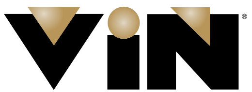

<!doctype html>
<html lang="en" data-theme="light">
<head>
  <meta charset="utf-8" />
  <meta name="viewport" content="width=device-width, initial-scale=1" />
  <title>VIN Transcript Software — Vue 3 port</title>
  <link rel="icon" href="assets/VIN.svg" />
  <link rel="stylesheet" href="app.css" />
  <link rel="stylesheet" href="wiring.css" />
  <link rel="stylesheet" href="settings.css" />
  <link rel="stylesheet" href="login.css" />
</head>
<body>
  <div id="app"></div>

  <!-- Vue 3 (pinned) -->
  <script src="https://unpkg.com/vue@3.4.27/dist/vue.global.prod.js"></script>

  <script>
    /* eslint-disable */
    // ─────────────────────────────────────────────────────────────
    // VIN Transcript Software — Vue 3 port (pixel-parity)
    //
    // Reuses every CSS file from the React prototype unchanged. The
    // surfaces here are framework translations of the same components.
    // Composition API, single-file mount, hash router, in-memory state.
    // ─────────────────────────────────────────────────────────────
    const { createApp, ref, reactive, computed, watch, watchEffect, onMounted, onBeforeUnmount, h, defineComponent } = Vue;

    // ═════════════ FIXTURE DATA (mirrors data.jsx) ═════════════
    const SPEAKERS = {
      presenter: { id: "sp1", name: "Dr. Pamela Mueller, DVM, DACVS", short: "Dr. Mueller", role: "Presenter", color: "#002855" },
      cohost:    { id: "sp2", name: "Dr. Reggie Okafor, DVM",        short: "Dr. Okafor", role: "Co-host",   color: "#007D61" },
      moderator: { id: "sp3", name: "Jenna Hsu, RVT (Moderator)",    short: "J. Hsu",     role: "Moderator", color: "#B9975B" },
    };
    const SLIDES = Array.from({ length: 24 }, (_, i) => ({
      id: `s${String(i + 1).padStart(2, "0")}`, n: i + 1,
      title: [
        "Title — Surgical Approach to GI Foreign Body Removal",
        "Speaker Bio & Disclosures", "Learning Objectives", "Epidemiology of GI FB in Small Animals",
        "Common Foreign Bodies — Linear vs Discrete", "Clinical Presentation", "Diagnostic Imaging — Radiograph Patterns",
        "Ultrasound Findings", "Preoperative Stabilization", "Anesthetic Plan & Monitoring",
        "Surgical Site Preparation", "Enterotomy — Technique & Closure", "Gastrotomy — Indications & Approach",
        "Resection & Anastomosis Decision Tree", "Closure Patterns — Comparison Study", "Postoperative Care",
        "Complications — Dehiscence & Septic Peritonitis", "Case Study 01 — Sock Obstruction in a 4yo Lab",
        "Case Study 02 — Linear FB in a DSH", "Owner Communication & Prognosis", "Pearls & Pitfalls",
        "Q&A", "References", "Thank You",
      ][i] || `Slide ${i + 1}`,
      kind: i === 0 ? "title" : i === 1 ? "bio" : "content",
    }));
    const SLIDE_PALETTE = ["#2563eb","#7c3aed","#059669","#d97706","#dc2626","#0891b2","#6366f1","#ea580c","#0d9488","#be185d"];
    const slideAccent = (id) => {
      const i = SLIDES.findIndex((s) => s.id === id);
      return i < 0 ? "#4D6995" : SLIDE_PALETTE[i % SLIDE_PALETTE.length];
    };
    const withAlpha = (hex, a) => hex && hex.length === 7 ? hex + a : hex;

    const SOP_STAGES = [
      { id: "prep",       name: "Prep",               order: 1 },
      { id: "copy_draft", name: "Copy edit (draft)",  order: 2 },
      { id: "medical",    name: "Medical review",     order: 3 },
      { id: "copy_final", name: "Copy edit (final)",  order: 4 },
      { id: "cms",        name: "CMS published",      order: 5 },
      { id: "captions",   name: "Captions on video",  order: 6 },
      { id: "qa",         name: "QA",                 order: 7 },
      { id: "complete",   name: "Complete",           order: 8 },
    ];
    const SESSIONS = [
      { id: "se_001", code: "060524_Mueller",       title: "Surgical Approach to GI Foreign Body Removal", presenter: "Dr. Pamela Mueller", duration: "1h 04m", recorded: "2026-05-14", stage: "copy_draft", progress: 38, attendees: 612, needsReviewCount: 7, status: "active", segs: 66, words: 6240, avgConf: 82, alignment: 100, coverage: "24/24" },
      { id: "se_002", code: "010726_Pickles",       title: "Crafting a Neurodivergent Career in Veterinary Practice", presenter: "Dr. Kirstie Pickles", duration: "0h 58m", recorded: "2026-05-13", stage: "medical", progress: 36, attendees: 489, needsReviewCount: 14, status: "active", segs: 73, words: 6892, avgConf: 82, alignment: 100, coverage: "26/26" },
      { id: "se_003", code: "041526_JepsenGrant",   title: "Cage-Side Radiology Rounds: Various Cases", presenter: "Dr. Hiro Tanaka", duration: "1h 12m", recorded: "2026-05-12", stage: "copy_final", progress: 62, attendees: 287, needsReviewCount: 2, status: "active", segs: 120, words: 9120, avgConf: 78, alignment: 95, coverage: "18/18" },
      { id: "se_004", code: "042326_Anaphylaxis",   title: "Anaphylaxis in the Emergency Setting", presenter: "Dr. Reggie Okafor", duration: "0h 47m", recorded: "2026-05-11", stage: "qa", progress: 88, attendees: 1024, needsReviewCount: 0, status: "active", segs: 54, words: 5612, avgConf: 91, alignment: 100, coverage: "14/14" },
      { id: "se_005", code: "050726_Cytology",      title: "Cytology of Cutaneous Round Cell Tumors", presenter: "Dr. Aliyah Khan", duration: "1h 18m", recorded: "2026-05-09", stage: "captions", progress: 72, attendees: 391, needsReviewCount: 1, status: "active", segs: 132, words: 10240, avgConf: 84, alignment: 98, coverage: "29/29" },
      { id: "se_006", code: "050726_OLeary",        title: "Feline Corneal Disease: Cats Are Not Small Dogs!", presenter: "Dr. Patrick O'Leary", duration: "1h 05m", recorded: "2026-05-08", stage: "cms", progress: 80, attendees: 1208, needsReviewCount: 0, status: "active", segs: 73, words: 7104, avgConf: 88, alignment: 100, coverage: "21/21" },
      { id: "se_007", code: "050626_GeriPain",      title: "Pain Management in the Geriatric Cat", presenter: "Dr. Emma Rivera", duration: "0h 51m", recorded: "2026-05-06", stage: "prep", progress: 4, attendees: 0, needsReviewCount: 0, status: "processing", segs: 0, words: 0, avgConf: 0, alignment: 0, coverage: "0/0" },
      { id: "se_008", code: "050526_ReproImg",      title: "Reproductive Imaging in the Bitch", presenter: "Dr. Jamie Forsythe", duration: "0h 56m", recorded: "2026-05-05", stage: "complete", progress: 100, attendees: 736, needsReviewCount: 0, status: "complete", segs: 88, words: 7320, avgConf: 90, alignment: 100, coverage: "19/19" },
    ];

    // Demo segments (subset for the editor)
    const SEGMENTS = [
      ["s01","moderator","Good morning everyone and welcome to today's continuing education session on the surgical approach to gastrointestinal foreign body removal in small animals."],
      ["s01","moderator","I'm Jenna Hsu and I'll be moderating today's session. Before we begin, a reminder that this webinar is being recorded for the VIN library."],
      ["s02","presenter","Thank you Jenna. It's a pleasure to be here. Before we dive in, a quick disclosure — I have no relevant financial relationships with any commercial entities."],
      ["s03","presenter","By the end of this hour you should be able to recognize the four classic radiographic patterns of GI obstruction, decide between enterotomy and resection-anastomosis, and counsel owners on realistic prognosis."],
      ["s04","presenter","Looking at our institutional data from 2019 through 2024 we saw roughly twelve hundred GI foreign body cases across companion animal species."],
      ["s05","presenter","Foreign bodies fall broadly into two categories — discrete and linear. Discrete bodies are usually toys, bones, corn cobs, balls, rocks."],
      ["s06","presenter","Presenting signs depend on the level and completeness of obstruction. Proximal complete obstructions present with violent unproductive vomiting within hours."],
      ["s07","presenter","On survey radiographs we look for four patterns. Pattern one — discrete radiopaque foreign body, easiest case."],
      ["s08","presenter","Ultrasound has largely replaced contrast studies in our institution. With a competent sonographer you can identify the obstruction site, assess wall thickness, and evaluate for free fluid."],
      ["s09","presenter","Before you cut, stabilize. A bolus of balanced crystalloid at ten to twenty milliliters per kilogram over fifteen minutes corrects most cases of mild dehydration."],
      ["s10","presenter","Our standard anesthetic protocol for GI surgery is methadone-midazolam premed, propofol induction, and isoflurane maintenance with an opioid CRI intraoperatively."],
      ["s12","presenter","Enterotomy is the workhorse procedure. Choose an incision site on the antimesenteric border just distal to the foreign body in healthy-appearing tissue."],
      ["s14","presenter","When do you resect versus repair? Three criteria push me toward resection — non-viability, perforation, or a closure that would compromise more than fifty percent of the lumen."],
    ].map((row, i) => {
      const start = 12 + i * 28;
      return { id: `seg_${String(i+1).padStart(3,"0")}`, idx: i, start, end: start + 26, slide_id: row[0], speaker: row[1], text: row[2], ai_flags: [], needs_review: i % 6 === 0, confidence: "normal" };
    });

    // ═════════════ HASH ROUTER ═════════════
    const route = ref(parseHash(location.hash));
    function parseHash(h) {
      const path = (h || "#/dashboard").slice(1);
      const [p, qs] = path.split("?");
      const params = {};
      (qs || "").split("&").forEach((kv) => {
        if (!kv) return;
        const [k, v] = kv.split("=");
        params[decodeURIComponent(k)] = decodeURIComponent(v || "");
      });
      return { path: p || "/dashboard", params };
    }
    window.addEventListener("hashchange", () => { route.value = parseHash(location.hash); });
    function navigate(to) { location.hash = to; }

    // ═════════════ TOAST + CONFIRM + AUDIT ═════════════
    const toasts = reactive([]);
    let toastId = 0;
    function toast(message, opts = {}) {
      const id = ++toastId;
      toasts.push({ id, message, tone: opts.tone || "info", action: opts.action || null });
      setTimeout(() => dismissToast(id), opts.duration ?? 4000);
    }
    function dismissToast(id) { const i = toasts.findIndex((t) => t.id === id); if (i >= 0) toasts.splice(i, 1); }

    const confirmState = ref(null);
    let confirmResolve = null;
    function confirmDialog(opts) {
      return new Promise((r) => { confirmResolve = r; confirmState.value = opts; });
    }
    function confirmAccept() { if (confirmResolve) confirmResolve(true); confirmResolve = null; confirmState.value = null; }
    function confirmCancel() { if (confirmResolve) confirmResolve(false); confirmResolve = null; confirmState.value = null; }

    const auditEvents = reactive([]);
    function auditLog(actor, kind, summary) {
      auditEvents.unshift({ id: Date.now() + Math.random(), t: new Date().toLocaleTimeString("en-US", { hour: "2-digit", minute: "2-digit" }), actor, kind, summary });
    }

    // ═════════════ ICONS ═════════════
    const ICONS = {
      play: '<polygon points="6 4 20 12 6 20 6 4" fill="currentColor" stroke="none"/>',
      pause: '<rect x="6" y="4" width="4" height="16" fill="currentColor" stroke="none"/><rect x="14" y="4" width="4" height="16" fill="currentColor" stroke="none"/>',
      search: '<circle cx="11" cy="11" r="7"/><line x1="21" y1="21" x2="16.65" y2="16.65"/>',
      edit: '<path d="M12 20h9"/><path d="M16.5 3.5a2.121 2.121 0 0 1 3 3L7 19l-4 1 1-4 12.5-12.5z" fill="currentColor" fill-opacity="0.18"/>',
      check: '<polyline points="20 6 9 17 4 12"/>',
      x: '<line x1="18" y1="6" x2="6" y2="18"/><line x1="6" y1="6" x2="18" y2="18"/>',
      "chevron-right": '<polyline points="9 18 15 12 9 6"/>',
      "chevron-left": '<polyline points="15 18 9 12 15 6"/>',
      "chevron-down": '<polyline points="6 9 12 15 18 9"/>',
      download: '<path d="M21 15v4a2 2 0 0 1-2 2H5a2 2 0 0 1-2-2v-4"/><polyline points="7 10 12 15 17 10"/><line x1="12" y1="15" x2="12" y2="3"/>',
      external: '<path d="M18 13v6a2 2 0 0 1-2 2H5a2 2 0 0 1-2-2V8a2 2 0 0 1 2-2h6"/><polyline points="15 3 21 3 21 9"/><line x1="10" y1="14" x2="21" y2="3"/>',
      filter: '<polygon points="22 3 2 3 10 12.46 10 19 14 21 14 12.46 22 3" fill="currentColor" stroke="none" fill-opacity="0.85"/>',
      branch: '<line x1="6" y1="3" x2="6" y2="15"/><circle cx="18" cy="6" r="3"/><circle cx="6" cy="18" r="3"/><path d="M18 9a9 9 0 0 1-9 9"/>',
      history: '<polyline points="1 4 1 10 7 10"/><path d="M3.51 15a9 9 0 1 0 2.13-9.36L1 10"/><polyline points="12 7 12 12 16 14"/>',
      "circle-dot": '<circle cx="12" cy="12" r="10"/><circle cx="12" cy="12" r="3" fill="currentColor" stroke="none"/>',
      flag: '<path d="M4 15s1-1 4-1 5 2 8 2 4-1 4-1V3s-1 1-4 1-5-2-8-2-4 1-4 1z" fill="currentColor" fill-opacity="0.2"/><line x1="4" y1="22" x2="4" y2="15"/>',
      alert: '<path d="M10.29 3.86L1.82 18a2 2 0 0 0 1.71 3h16.94a2 2 0 0 0 1.71-3L13.71 3.86a2 2 0 0 0-3.42 0z" fill="currentColor" fill-opacity="0.15"/><line x1="12" y1="9" x2="12" y2="13"/><line x1="12" y1="17" x2="12.01" y2="17"/>',
      slide: '<rect x="3" y="5" width="18" height="14" rx="2"/><line x1="7" y1="9" x2="17" y2="9"/><line x1="7" y1="13" x2="13" y2="13"/>',
      lightning: '<polygon points="13 2 3 14 12 14 11 22 21 10 12 10 13 2" fill="currentColor" fill-opacity="0.18"/>',
      shield: '<path d="M12 22s8-4 8-10V5l-8-3-8 3v7c0 6 8 10 8 10z" fill="currentColor" fill-opacity="0.15"/>',
      message: '<path d="M21 11.5a8.38 8.38 0 0 1-.9 3.8 8.5 8.5 0 0 1-7.6 4.7 8.38 8.38 0 0 1-3.8-.9L3 21l1.9-5.7a8.38 8.38 0 0 1-.9-3.8 8.5 8.5 0 0 1 4.7-7.6 8.38 8.38 0 0 1 3.8-.9h.5a8.48 8.48 0 0 1 8 8v.5z"/>',
      user: '<path d="M20 21v-2a4 4 0 0 0-4-4H8a4 4 0 0 0-4 4v2"/><circle cx="12" cy="7" r="4"/>',
      list: '<line x1="8" y1="6" x2="21" y2="6"/><line x1="8" y1="12" x2="21" y2="12"/><line x1="8" y1="18" x2="21" y2="18"/>',
      doc: '<path d="M14 2H6a2 2 0 0 0-2 2v16a2 2 0 0 0 2 2h12a2 2 0 0 0 2-2V8z"/><polyline points="14 2 14 8 20 8"/>',
      speaker: '<polygon points="11 5 6 9 2 9 2 15 6 15 11 19 11 5" fill="currentColor" fill-opacity="0.2"/><path d="M19.07 4.93a10 10 0 0 1 0 14.14M15.54 8.46a5 5 0 0 1 0 7.07"/>',
    };
    const Icon = {
      props: ["name", "size"],
      template: `<svg :width="size||14" :height="size||14" viewBox="0 0 24 24" fill="none" stroke="currentColor" stroke-width="2" stroke-linecap="round" stroke-linejoin="round" v-html="svg" />`,
      computed: { svg() { return ICONS[this.name] || '<circle cx="12" cy="12" r="4"/>'; } },
    };

    // ═════════════ APP HEADER ═════════════
    const AppHeader = {
      components: { Icon },
      setup() {
        const isActive = (prefixes) => prefixes.some((p) => route.value.path.startsWith(p));
        const logout = async () => {
          const ok = await confirmDialog({ title: "Sign out?", body: "You'll be redirected to login.", confirmLabel: "Sign out" });
          if (!ok) return;
          auditLog("You", "auth", "Signed out");
          toast("Signed out", { tone: "ok" });
          navigate("/login");
        };
        return { route, isActive, logout, navigate };
      },
      template: `
        <header class="app-header">
          <a href="#/sessions" class="app-header__brand">
            
            <span class="app-header__divider"></span>
            <span class="app-header__product">transcript<strong>.software</strong></span>
          </a>
          <span class="app-header__build">v4.0.0-ssot-r2 · Vue 3</span>
          <nav class="app-header__nav">
            <a href="#/dashboard"     :class="{ 'is-active': isActive(['/dashboard']) }">Dashboard</a>
            <a href="#/sessions"      :class="{ 'is-active': isActive(['/sessions','/s/','/e/','/v/','/p/']) }">Sessions</a>
            <a href="#/upload"        :class="{ 'is-active': isActive(['/upload']) }">Upload</a>
            <a href="#/improvements"  :class="{ 'is-active': isActive(['/improvements']) }">Improvements</a>
            <a href="#/settings"      :class="{ 'is-active': isActive(['/settings']) }">Settings</a>
          </nav>
          <div class="app-header__tools">
            <button class="app-header__icon-btn" title="Search">
              <Icon name="search" :size="14" />
            </button>
            <span class="app-header__divider"></span>
            <button class="app-header__icon-btn app-header__icon-btn--mono">A−</button>
            <button class="app-header__icon-btn app-header__icon-btn--mono">A+</button>
            <span class="app-header__divider"></span>
            <span class="app-header__status"><span class="dot"></span> nominal</span>
          </div>
          <div class="app-header__user">
            <span class="app-header__avatar">KS</span>
            <span style="margin-right:4px">Kate Schultz</span>
            <button class="app-header__icon-btn app-header__icon-btn--mono" @click="logout">Logout</button>
          </div>
        </header>
      `,
    };

    // ═════════════ LOGIN ═════════════
    const LoginRoute = {
      components: { Icon },
      setup() {
        const email = ref("kate.schultz@vin.com");
        const pw = ref("");
        const busy = ref(false);
        const signIn = async (e) => {
          if (e) e.preventDefault();
          if (!email.value || !pw.value) { toast("Email and password required", { tone: "attn" }); return; }
          busy.value = true;
          await new Promise((r) => setTimeout(r, 420));
          busy.value = false;
          auditLog("You", "auth", "Signed in as " + email.value);
          toast("Welcome back, " + email.value.split("@")[0], { tone: "ok" });
          navigate("/dashboard");
        };
        return { email, pw, busy, signIn };
      },
      template: `
        <main class="login">
          <div class="login__bg"></div>
          <form class="login__card" @submit="signIn">
            <div class="login__brand">
              
              <div class="login__brand-text">
                <div class="login__brand-name">TRANSCRIPT<strong>.SOFTWARE</strong></div>
                <div class="login__brand-sub">VIN Transcript Operations Console</div>
              </div>
            </div>
            <h1 class="login__title">Sign in</h1>
            <span class="login__pill">V4.0.0 · OPERATOR CONSOLE · VUE</span>
            <p class="login__lead">Audit-traceable transcription workflow for VIN continuing-education sessions · SOP-gated review · append-only correction lineage.</p>
            <label class="login__label">
              Email
              <input type="email" class="login__input" v-model="email" placeholder="you@vin.com" autofocus />
            </label>
            <label class="login__label">
              Password
              <input type="password" class="login__input" v-model="pw" placeholder="••••••••••••" />
            </label>
            <div class="login__row">
              <label class="login__remember"><input type="checkbox" checked /> Keep me signed in for 8 hours</label>
              <a href="#/login" class="login__forgot" @click.prevent>Forgot password?</a>
            </div>
            <button type="submit" class="login__submit" :disabled="busy">{{ busy ? 'Signing in…' : 'Sign in' }}</button>
            <div class="login__foot">
              <span>Build <code>v4.0.0-ssot-r2 · Vue 3</code></span>
              <span>·</span>
              <span>System status: nominal</span>
            </div>
          </form>
        </main>
      `,
    };

    // ═════════════ STAGE BADGE ═════════════
    const StageBadge = {
      props: ["id"],
      computed: {
        stage() { return SOP_STAGES.find((s) => s.id === this.id); },
      },
      template: `<span v-if="stage" :class="['stage-badge','stage-badge--'+id]">{{ stage.order }}. {{ stage.name }}</span>`,
    };

    // ═════════════ DASHBOARD ═════════════
    const DashboardRoute = {
      components: { Icon, StageBadge },
      setup() {
        const greeting = (() => {
          const h = new Date().getHours();
          return h < 12 ? "Good morning" : h < 18 ? "Good afternoon" : "Good evening";
        })();
        const dateLabel = new Date().toLocaleDateString("en-US", { weekday: "long", month: "long", day: "numeric" }).toUpperCase();
        const timeRange = ref("7d");
        const pipelineFilter = ref("all");

        const topKpis = [
          { label: "AI Sessions",     value: 19,      sub: "19 ready · 0 processing",     spark: [12,14,15,17,16,18,19] },
          { label: "SOP Sessions",    value: 23,      sub: "8-stage workflow",            spark: [18,19,21,20,22,22,23] },
          { label: "Segments",        value: "1,607", sub: "words[] immutable SSOT",      spark: [800,1020,1190,1310,1420,1530,1607] },
          { label: "Artifacts",       value: 1,       sub: "0 lineage rows",              spark: [0,0,0,0,0,1,1] },
          { label: "CMS Published",   value: 0,       sub: "cms_documents table",         spark: [] },
          { label: "Improvement RQs", value: 4,       sub: "0 pending",                   spark: [1,2,2,3,4,4,4] },
        ];
        const queue = [
          { code: "010525_Lykins",    stage: "copy_final", title: "VIN/ARAV Rounds: A Spectacle to Behold",        segs: 100, due: "Due in 2d", status: "Review and lock copy" },
          { code: "040226_Williams",  stage: "medical",    title: "Controlled Substances: Addressing Drug Diversion", segs: 56, due: "Due in 3d", status: "Medical accuracy pass" },
          { code: "010925_Gottlieb",  stage: "copy_draft", title: "VIN/IVAPM Rounds: Chronic Pain",                  segs: 62, due: "Due in 4d", status: "Apply copy edits" },
        ];
        const aiPipeline = [
          { id: "upload", label: "Upload", code: "UPLOAD", count: 0, state: "idle" },
          { id: "transcribe", label: "Transcribe", code: "TRANSCRIBE", count: 0, state: "idle" },
          { id: "normalize", label: "Normalize", code: "NORMALIZE", count: 0, state: "idle" },
          { id: "align", label: "Align", code: "ALIGN", count: 0, state: "idle" },
          { id: "fuse", label: "Fuse", code: "FUSE", count: 0, state: "idle" },
          { id: "ready", label: "Ready", code: "READY", count: 19, state: "active" },
          { id: "failed", label: "Failed", code: "FAILED", count: 0, state: "failed" },
        ];
        const sopPipeline = [
          { id: "prep", count: 17 }, { id: "copy_draft", count: 1 }, { id: "medical", count: 1, attn: true },
          { id: "copy_final", count: 3 }, { id: "cms", count: 1 }, { id: "captions", count: 0 },
          { id: "qa", count: 0 }, { id: "complete", count: 0 },
        ];
        const opsKpis = [
          { label: "Unresolved Discrepancies", value: "1,574", sub: "global review backlog",  spark: [1800,1720,1690,1640,1610,1590,1574], color: "var(--text-accent)" },
          { label: "QA Tasks",                 value: 0,       sub: "0 overdue · 0 passed",   spark: [3,2,4,1,2,1,0] },
          { label: "Storage Used",             value: "3.7 GB", sub: "across all sources",    spark: [2.4,2.7,3.0,3.2,3.4,3.6,3.7] },
          { label: "Avg Processing",           value: "3.9m",  sub: "19 samples",             spark: [4.5,4.4,4.2,4.1,4.0,3.95,3.9] },
          { label: "Avg Feedback",             value: "—",     sub: "0 ratings",              spark: [] },
          { label: "Fusion Runs",              value: 0,       sub: "replay_log table",       spark: [] },
        ];
        const sla = [
          { id: "prep",       label: "Prep",              dAvg: 2.1, target: 3, sess: 17, state: "ok" },
          { id: "copy_draft", label: "Copy Edit (draft)", dAvg: 1.4, target: 2, sess: 1,  state: "ok" },
          { id: "medical",    label: "Medical Review",    dAvg: 3.3, target: 2, sess: 1,  state: "breach" },
          { id: "copy_final", label: "Copy Edit (final)", dAvg: 1.8, target: 2, sess: 3,  state: "ok" },
          { id: "cms",        label: "CMS Published",     dAvg: 0.9, target: 1, sess: 1,  state: "ok" },
          { id: "captions",   label: "Captions",          dAvg: null, target: 1, sess: 0, state: "empty" },
          { id: "qa",         label: "QA",                dAvg: null, target: 1, sess: 0, state: "empty" },
          { id: "complete",   label: "Complete",          dAvg: null, target: 0, sess: 0, state: "empty" },
        ];
        const ageAlerts = [
          { title: "Crafting a Neurodivergent Career in Veterinary Practice", stage: "Prep", age: "3.4d" },
          { title: "VIN/IVAPM Rounds: Chronic Pain", stage: "Prep", age: "3.4d" },
          { title: "Controlled Substances, Uncontrolled Access: Addressing Drug Diversion…", stage: "Prep", age: "3.4d" },
          { title: "VIN/AEMV Rounds: Exotic Companion Mammal Enrichment and Training", stage: "CE Final", age: "3.4d" },
          { title: "VIN/IVAPM Rounds: Chronic Pain", stage: "Medical", age: "3.4d" },
        ];
        const hotspots = [
          { title: "Session 2026-04-18 14:41", edits: 16, pct: 100 },
          { title: "VIN/ARAV Rounds: A Spectacle to Behold: Snake Ophthalmology Cas…", edits: 9, pct: 56 },
          { title: "Cage-side Radiology Rounds: Various Cases. January 6, 2025", edits: 5, pct: 31 },
          { title: "Tuesday Topic: Understanding Separation-Related Behaviors", edits: 3, pct: 19 },
          { title: "Tuesday Topic: Equine Dermatology: Bacterial Dermatitis in the Horse:…", edits: 2, pct: 12 },
        ];
        const storageTop = [
          { title: "VIN/VECCS Rounds: Snake Envenomation Management in Pets", size: "364 MB", pct: 100 },
          { title: "VIN/ARAV Rounds: A Spectacle to Behold: Snake Ophthalmology Ca…", size: "231 MB", pct: 63 },
          { title: "VIN/AEMV Rounds: Exotic Companion Mammal Enrichment and Train…", size: "228 MB", pct: 62 },
          { title: "Cage-Side Radiology Rounds: Various Cases", size: "217 MB", pct: 59 },
          { title: "Lessons Learned From Human Commercial Labs: HbA1C in Europe", size: "196 MB", pct: 54 },
        ];
        const jobs = [
          { name: "transcribe",  ok: 19, err: 0 },
          { name: "normalize",   ok: 19, err: 0 },
          { name: "align",       ok: 19, err: 0 },
          { name: "fuse",        ok: 19, err: 0 },
          { name: "publish_cms", ok: 0,  err: 0 },
        ];
        const storage = [
          { name: "Audio (raw)",     hint: "audio/*",   size: "2.84 GB", pct: 100 },
          { name: "Transcripts",     hint: "words[]",   size: "410 MB",  pct: 14 },
          { name: "Slide exports",   hint: "png/pdf",   size: "280 MB",  pct: 10 },
          { name: "Artifacts",       hint: "docx/srt",  size: "110 MB",  pct: 4 },
          { name: "Audit + logs",    hint: "jsonl",     size: "60 MB",   pct: 2 },
        ];
        const coverage = [
          { name: "Tina Pratt",      role: "Editor",     load: 3, cap: 5 },
          { name: "Heather Howell",  role: "Moderator",  load: 2, cap: 6 },
          { name: "Kelsey Lykins",   role: "Medical",    load: 1, cap: 4 },
        ];
        const typeChips = ["All types", "ARAV", "NAVAS"];

        function sparkPath(data) {
          if (!data || data.length < 2) return "";
          const w = 100, h = 18;
          const max = Math.max(...data), min = Math.min(...data);
          const range = max - min || 1;
          return data.map((v, i) => `${((i / (data.length - 1)) * w).toFixed(1)},${(h - ((v - min) / range) * h).toFixed(1)}`).join(" ");
        }

        return {
          greeting, dateLabel, timeRange, pipelineFilter, topKpis, queue, aiPipeline, sopPipeline,
          opsKpis, sla, ageAlerts, hotspots, storageTop, jobs, storage, coverage, typeChips,
          SOP_STAGES, navigate, sparkPath,
        };
      },
      template: `
        <main class="page dash-page">
          <div class="dash-header">
            <div>
              <div class="dash-eyebrow">Today · {{ dateLabel }}</div>
              <h1 class="dash-title">{{ greeting }}, Kate</h1>
              <p class="dash-lead">Dual-pipeline system · 23 SOP sessions · 19 AI sessions</p>
            </div>
            <div class="page-actions">
              <button class="btn btn--secondary"><Icon name="filter" /> Filters</button>
              <button class="btn btn--primary" @click="navigate('/upload')"><Icon name="circle-dot" /> New upload</button>
            </div>
          </div>

          <div class="dash-kpis dash-kpis--6">
            <div v-for="k in topKpis" :key="k.label" class="dash-kpi">
              <div class="dash-kpi__label">{{ k.label }}</div>
              <div class="dash-kpi__value">{{ k.value }}</div>
              <div class="dash-kpi__sub">{{ k.sub }}</div>
              <svg v-if="k.spark.length" class="dash-spark" viewBox="0 0 100 18" preserveAspectRatio="none"><polyline :points="sparkPath(k.spark)" fill="none" stroke="currentColor" stroke-width="1.5"/></svg>
              <div v-else class="dash-spark dash-spark--empty"></div>
            </div>
          </div>

          <section class="dash-section">
            <div class="dash-section__head">
              <span class="dash-section__title">Your Queue</span>
              <span class="dash-section__sub">Assigned to you, ordered by due date</span>
              <a href="#/sessions" class="dash-section__action">View all →</a>
            </div>
            <div class="dash-queue">
              <div v-for="q in queue" :key="q.code" class="dash-queue__card" @click="navigate('/e/se_001')">
                <div class="dash-queue__head">
                  <div class="dash-queue__code">{{ q.code }}</div>
                  <StageBadge :id="q.stage" />
                </div>
                <div class="dash-queue__title">{{ q.title }}</div>
                <div class="dash-queue__meta">
                  <span>{{ q.segs }} segs</span><span>·</span><span>Aligned</span><span>·</span>
                  <span style="color:var(--text-accent);font-weight:700">{{ q.due }}</span>
                </div>
                <div class="dash-queue__foot">
                  <span class="dash-queue__status">{{ q.status }}</span>
                  <button class="btn btn--primary btn--sm">Open <Icon name="chevron-right" :size="11" /></button>
                </div>
              </div>
            </div>
          </section>

          <section class="dash-section">
            <div class="dash-section__head">
              <span class="dash-section__title">Pipeline</span>
              <span class="dash-section__sub">23 sessions · 7 AI stages + 8 SOP stages</span>
              <div class="dash-section__filter">
                <button v-for="t in typeChips" :key="t" :class="['chip', pipelineFilter === t ? 'chip--solid' : '']" @click="pipelineFilter = t" style="cursor:pointer">{{ t }}</button>
                <button class="chip" style="cursor:pointer;color:var(--fg2)">+5</button>
              </div>
            </div>
            <div class="dash-pipeline-card">
              <div class="dash-pipeline-card__eyebrow">Pipeline 1 · AI Processing · <code>session.status</code> · 7 stages</div>
              <div class="dash-pipeline">
                <template v-for="(s, i) in aiPipeline" :key="s.id">
                  <div class="dash-pipe-step">
                    <div :class="['dash-pipe-circle','dash-pipe-circle--'+s.state, s.count > 0 ? 'is-populated' : '']">{{ s.count }}</div>
                    <div class="dash-pipe-name">{{ s.label }}</div>
                    <div class="dash-pipe-code">{{ s.code }}</div>
                  </div>
                  <span v-if="i < aiPipeline.length - 1" class="dash-pipe-arrow">›</span>
                </template>
              </div>
            </div>
            <div class="dash-pipeline-card" style="margin-top:10px">
              <div class="dash-pipeline-card__eyebrow">Pipeline 2 · SOP Control Layer · <code>sop_sessions.state</code> · 8 stages</div>
              <div class="dash-pipeline">
                <template v-for="(s, i) in sopPipeline" :key="s.id">
                  <div class="dash-pipe-step">
                    <div :class="['dash-pipe-circle', s.count > 0 ? 'dash-pipe-circle--active' : 'dash-pipe-circle--idle', s.attn ? 'is-attn' : '']">{{ s.count }}</div>
                    <div class="dash-pipe-name">{{ SOP_STAGES.find(x => x.id === s.id)?.name }}</div>
                    <div class="dash-pipe-code">{{ s.id.toUpperCase() }}</div>
                    <div v-if="s.attn" class="dash-pipe-attn">ATTN</div>
                  </div>
                  <span v-if="i < sopPipeline.length - 1" class="dash-pipe-arrow">›</span>
                </template>
              </div>
            </div>
          </section>

          <section class="dash-section dash-section--ops">
            <div class="dash-section__head">
              <div>
                <div class="dash-section__eyebrow">Operations · Workflow Health, Throughput, Storage</div>
                <span class="dash-section__title dash-section__title--big">System overview</span>
              </div>
              <div class="dash-section__filter dash-tabs">
                <button v-for="t in ['7d','30d','90d','All']" :key="t" :class="['dash-tab', timeRange === t ? 'is-active' : '']" @click="timeRange = t">{{ t }}</button>
              </div>
            </div>
            <div class="dash-kpis dash-kpis--6">
              <div v-for="k in opsKpis" :key="k.label" class="dash-kpi">
                <div class="dash-kpi__label">{{ k.label }}</div>
                <div class="dash-kpi__value" :style="k.color ? { color: k.color } : null">{{ k.value }}</div>
                <div class="dash-kpi__sub">{{ k.sub }}</div>
                <svg v-if="k.spark.length" class="dash-spark" viewBox="0 0 100 18" preserveAspectRatio="none"><polyline :points="sparkPath(k.spark)" fill="none" stroke="currentColor" stroke-width="1.5"/></svg>
                <div v-else class="dash-spark dash-spark--empty"></div>
              </div>
            </div>
            <div class="dash-sla">
              <div class="dash-sla__head">
                <div class="dash-section__eyebrow">SLA BY STAGE · DWELL TIME VS TARGET</div>
                <div class="dash-sla__legend">
                  <span><span class="dot" style="background:var(--color-green)"></span> on target</span>
                  <span><span class="dot" style="background:var(--color-blue)"></span> at risk</span>
                  <span><span class="dot" style="background:var(--color-red)"></span> breach</span>
                </div>
              </div>
              <div class="dash-sla__grid">
                <div v-for="s in sla" :key="s.id" :class="['dash-sla__cell','dash-sla__cell--'+s.state]">
                  <div class="dash-sla__label">{{ s.label }}</div>
                  <div class="dash-sla__value">
                    <template v-if="s.dAvg != null"><strong>{{ s.dAvg }}</strong> <span>d avg</span></template>
                    <strong v-else style="color:var(--fg2)">—</strong>
                  </div>
                  <div class="dash-sla__bar"><span :style="{ width: s.dAvg ? Math.min(100, (s.dAvg / Math.max(s.target, 4)) * 100) + '%' : '0%' }"></span></div>
                  <div class="dash-sla__foot"><span>{{ s.sess }} sess</span><span>target {{ s.target }}d</span></div>
                </div>
              </div>
            </div>
          </section>

          <div class="dash-three">
            <div class="dash-widget">
              <div class="dash-widget__head">
                <span class="dash-section__title">SOP Age Alerts</span>
                <span class="dash-section__sub">Oldest first</span>
                <a class="dash-section__action" href="#/sessions">All →</a>
              </div>
              <div class="dash-widget__body">
                <div v-for="(a, i) in ageAlerts" :key="i" class="dash-widget__row">
                  <div style="flex:1;min-width:0">
                    <div class="dash-widget__title">{{ a.title }}</div>
                    <div class="dash-widget__sub">{{ a.stage }}</div>
                  </div>
                  <div class="dash-widget__age">{{ a.age }}</div>
                </div>
              </div>
            </div>
            <div class="dash-widget">
              <div class="dash-widget__head">
                <span class="dash-section__title">Correction Hotspots</span>
                <span class="dash-section__sub">Top 5 edited</span>
                <a class="dash-section__action" href="#/sessions">All →</a>
              </div>
              <div class="dash-widget__body">
                <div v-for="(h, i) in hotspots" :key="i" class="dash-bar-row">
                  <div class="dash-bar-row__top">
                    <div class="dash-bar-row__title">{{ h.title }}</div>
                    <div class="dash-bar-row__val">{{ h.edits }} edits</div>
                  </div>
                  <div class="dash-bar-row__bar"><span :style="{ width: h.pct + '%' }"></span></div>
                </div>
              </div>
            </div>
            <div class="dash-widget">
              <div class="dash-widget__head">
                <span class="dash-section__title">Storage Top Sessions</span>
                <span class="dash-section__sub">By size</span>
                <a class="dash-section__action" href="#/sessions">All →</a>
              </div>
              <div class="dash-widget__body">
                <div v-for="(s, i) in storageTop" :key="i" class="dash-bar-row">
                  <div class="dash-bar-row__top">
                    <div class="dash-bar-row__title">{{ s.title }}</div>
                    <div class="dash-bar-row__val">{{ s.size }}</div>
                  </div>
                  <div class="dash-bar-row__bar"><span :style="{ width: s.pct + '%' }"></span></div>
                </div>
              </div>
            </div>
          </div>

          <div class="dash-three">
            <div class="dash-widget">
              <div class="dash-widget__head">
                <span class="dash-section__title">Jobs Queue</span>
                <span class="dash-section__sub">Last 24h</span>
              </div>
              <div class="dash-widget__body">
                <div v-for="j in jobs" :key="j.name" class="dash-jobs-row">
                  <span class="dash-jobs-row__name">{{ j.name }}</span>
                  <span class="dash-jobs-row__ok">{{ j.ok }} ok</span>
                  <span :class="['dash-jobs-row__err', j.err > 0 ? 'is-error' : '']">{{ j.err }} err</span>
                </div>
              </div>
            </div>
            <div class="dash-widget">
              <div class="dash-widget__head"><span class="dash-section__title">Storage Breakdown</span></div>
              <div class="dash-widget__body">
                <div v-for="s in storage" :key="s.name" class="dash-bar-row">
                  <div class="dash-bar-row__top">
                    <div class="dash-bar-row__title">{{ s.name }} <code style="margin-left:4px;font-size:10.5px;color:var(--fg2)">{{ s.hint }}</code></div>
                    <div class="dash-bar-row__val">{{ s.size }}</div>
                  </div>
                  <div class="dash-bar-row__bar"><span :style="{ width: s.pct + '%' }"></span></div>
                </div>
              </div>
            </div>
            <div class="dash-widget">
              <div class="dash-widget__head"><span class="dash-section__title">Assignment Coverage</span></div>
              <div class="dash-widget__body">
                <div v-for="c in coverage" :key="c.name" class="dash-coverage-row">
                  <div style="flex:1;min-width:0">
                    <div class="dash-coverage-row__name">{{ c.name }}</div>
                    <div class="dash-coverage-row__role">{{ c.role }}</div>
                  </div>
                  <div class="dash-coverage-row__load">{{ c.load }}/{{ c.cap }}</div>
                  <div class="dash-coverage-row__bar"><span :style="{ width: (c.load / c.cap * 100) + '%' }"></span></div>
                </div>
                <div class="dash-coverage-row dash-coverage-row--unassigned">
                  <div style="flex:1">
                    <div class="dash-coverage-row__name" style="color:var(--text-accent)">Unassigned</div>
                    <div class="dash-coverage-row__role">pool</div>
                  </div>
                  <div class="dash-coverage-row__load">17</div>
                  <a class="dash-section__action" href="#/sessions" style="font-size:11px">claim →</a>
                </div>
              </div>
            </div>
          </div>
        </main>
      `,
    };

    // ═════════════ SESSIONS LIST ═════════════
    const SessionsRoute = {
      components: { Icon, StageBadge },
      setup() {
        const query = ref("");
        const activeFilter = ref("all");
        const filters = [
          { id: "all", label: "All", count: SESSIONS.length },
          { id: "active", label: "In Workflow", count: SESSIONS.filter((s) => s.status === "active").length },
          { id: "needs", label: "Needs Review", count: SESSIONS.filter((s) => s.needsReviewCount > 0).length },
          { id: "processing", label: "Processing", count: SESSIONS.filter((s) => s.status === "processing").length },
          { id: "complete", label: "Published", count: SESSIONS.filter((s) => s.status === "complete").length },
        ];
        const stageFilter = computed(() => route.value.params.stage || null);
        const aiFilter = computed(() => route.value.params.ai || null);
        const stageMeta = computed(() => stageFilter.value ? SOP_STAGES.find((x) => x.id === stageFilter.value) : null);
        const filtered = computed(() => {
          let rows = [...SESSIONS];
          if (stageFilter.value) rows = rows.filter((s) => s.stage === stageFilter.value);
          if (aiFilter.value === "ready") rows = rows.filter((s) => s.status === "active");
          if (activeFilter.value === "active") rows = rows.filter((s) => s.status === "active");
          if (activeFilter.value === "processing") rows = rows.filter((s) => s.status === "processing");
          if (activeFilter.value === "complete") rows = rows.filter((s) => s.status === "complete");
          if (activeFilter.value === "needs") rows = rows.filter((s) => s.needsReviewCount > 0);
          if (query.value) {
            const q = query.value.toLowerCase();
            rows = rows.filter((s) => s.title.toLowerCase().includes(q) || s.presenter.toLowerCase().includes(q));
          }
          return rows;
        });
        return { query, activeFilter, filters, filtered, stageFilter, aiFilter, stageMeta, navigate };
      },
      template: `
        <main class="page">
          <div class="page-eyebrow"><span>Workspace</span><span class="sep">/</span><span>Sessions</span></div>
          <div style="display:flex;justify-content:space-between;align-items:flex-start;gap:20px;margin-bottom:8px">
            <div>
              <h1 class="page-title">Sessions</h1>
              <p class="page-desc">Continuing-education recordings in the v4 transcription pipeline. Click any row to open the session detail.</p>
            </div>
            <div class="page-actions">
              <button class="btn btn--secondary"><Icon name="download" /> Export CSV</button>
              <button class="btn btn--primary" @click="navigate('/upload')"><Icon name="circle-dot" /> New upload</button>
            </div>
          </div>
          <div class="toolbar">
            <div class="search">
              <Icon name="search" />
              <input v-model="query" placeholder="Search by title or presenter…" />
            </div>
            <div class="filter-chip-row">
              <span v-if="stageFilter || aiFilter" class="chip chip--solid" style="display:inline-flex;align-items:center;gap:6px">
                <template v-if="stageFilter">SOP: <strong>{{ stageMeta?.name }}</strong></template>
                <template v-else>AI: <strong>{{ aiFilter }}</strong></template>
                <button @click="navigate('/sessions')" style="background:transparent;border:none;color:inherit;font-size:13px;cursor:pointer;padding:0;margin-left:4px">×</button>
              </span>
              <button v-for="f in filters" :key="f.id" :class="['chip', activeFilter === f.id ? 'chip--solid' : '']" style="cursor:pointer" @click="activeFilter = f.id">
                {{ f.label }} <span style="opacity:0.7">· {{ f.count }}</span>
              </button>
            </div>
          </div>
          <div class="sessions-table">
            <div class="sessions-table__row sessions-table__row--head">
              <div>Code</div><div>Session</div><div>AI Status</div><div>SOP</div><div>Segs</div><div>Created</div><div></div>
            </div>
            <div v-for="s in filtered" :key="s.id" class="sessions-table__row sessions-table__row--body" @click="navigate('/s/'+s.id)">
              <div class="sessions-table__code">{{ s.code }}</div>
              <div>
                <div class="sessions-table__title">{{ s.title }}</div>
                <div class="sessions-table__sub">{{ s.code }}_audio.mp3</div>
              </div>
              <div><span :class="['chip', s.status === 'complete' ? 'chip--green' : s.status === 'processing' ? 'chip--amber' : 'chip--green']"><span class="chip__dot"></span> {{ s.status === 'processing' ? 'Processing' : s.status === 'complete' ? 'Published' : 'Ready' }}</span></div>
              <div><StageBadge :id="s.stage" /></div>
              <div class="sessions-table__meta" style="font-variant-numeric:tabular-nums;font-weight:600;color:var(--fg1)">{{ s.segs || 0 }}</div>
              <div class="sessions-table__updated">{{ s.recorded.slice(5).replace('-',' · ') }}</div>
              <div style="text-align:right"><button class="btn btn--ghost btn--icon btn--sm" @click.stop><Icon name="x" :size="12" /></button></div>
            </div>
          </div>
        </main>
      `,
    };

    // ═════════════ SESSION DETAIL ═════════════
    const SessionDetailRoute = {
      components: { Icon, StageBadge },
      props: ["id"],
      setup(props) {
        const session = computed(() => SESSIONS.find((s) => s.id === props.id) || SESSIONS[0]);
        const downloads = [
          { kind: "Word Document", ext: ".docx" },
          { kind: "Captions", ext: ".srt" },
          { kind: "Plain Text", ext: ".txt" },
          { kind: "Word Macro", ext: ".zip" },
        ];
        const stageAssignments = [
          { stage: "copy_draft", who: "(unassigned)", faded: true },
          { stage: "medical",    who: "V@V · Heather Howell" },
          { stage: "copy_final", who: "Main Contact · Ruth Schoonover" },
          { stage: "cms",        who: "Content Team (default)", group: true },
          { stage: "captions",   who: "Content Team" },
          { stage: "qa",         who: "Content Team (default)", group: true },
        ];
        const publishingLinks = ["Zoom recording", "Slides", "Podbean", "VINcast", "Intranet", "Session page"];
        const sessionFiles = [
          { name: "Slides",            present: true,  desc: "Slides extracted — you can replace or append a new deck.", icon: "slide" },
          { name: "Chat log",          present: true,  desc: "Chat present — uploading new chat replaces existing messages.", icon: "message" },
          { name: "Session manifest",  present: true,  desc: "Manifest present — you can use a new one or keep current.", icon: "doc" },
          { name: "Speaker bios",      present: false, desc: "Without bios, speaker credentials won't render in the export.", icon: "user" },
        ];
        const segConfList = Array.from({ length: 31 }, (_, i) => {
          const pct = 75 + ((i * 7) % 25);
          const slideId = SLIDES[i % SLIDES.length]?.id;
          return { n: i + 1, conf: pct, slideColor: slideAccent(slideId) };
        });
        const reviewQueue = SEGMENTS.filter((s) => s.needs_review).slice(0, 10).map((s, i) => ({
          id: `g${95 + i}`,
          preview: s.text.slice(0, 100) + "…",
        }));
        const slidesView = SLIDES.slice(0, 16);
        const segmentsBySlide = computed(() => {
          const m = new Map();
          SLIDES.forEach((sl) => m.set(sl.id, []));
          SEGMENTS.forEach((s) => { if (s.slide_id && m.has(s.slide_id)) m.get(s.slide_id).push(s); });
          return m;
        });
        return {
          session, downloads, stageAssignments, publishingLinks, sessionFiles,
          segConfList, reviewQueue, slidesView, segmentsBySlide,
          SOP_STAGES, SLIDES, navigate, slideAccent, toast,
          totalDuration: MIC_DATA.TOTAL_DURATION,
        };
      },
      template: `
        <main class="page" v-if="session">
          <div class="page-eyebrow">
            <a href="#/sessions">Sessions</a><span class="sep">/</span>
            <code style="font-family:var(--font-mono);color:var(--fg-link)">{{ session.code }}</code>
          </div>
          <div class="sd-header">
            <div>
              <div style="display:flex;align-items:center;gap:14px;margin-bottom:6px">
                <span class="chip chip--green"><Icon name="check" :size="10" /> Content ready</span>
                <span class="chip chip--ghost">{{ session.code }}</span>
              </div>
              <h1 class="sd-header__title">{{ session.title }}</h1>
              <p class="sd-header__sub">INTERIM: {{ session.title }}</p>
            </div>
            <div class="sd-header__actions">
              <span class="chip chip--amber"><span class="chip__dot"></span> {{ session.needsReviewCount }} to review</span>
              <span class="chip chip--green"><span class="chip__dot"></span> {{ session.alignment }}% aligned</span>
              <a :href="'#/e/'+session.id+'/sop'" class="btn btn--secondary"><Icon name="branch" /> Workflow</a>
              <a :href="'#/e/'+session.id+'/audit'" class="btn btn--secondary"><Icon name="history" /> Audit</a>
              <a :href="'#/e/'+session.id" class="btn btn--primary"><Icon name="edit" /> Open Editor</a>
            </div>
          </div>

          <div class="sd-grid">
            <!-- LEFT — meta + downloads -->
            <div class="sd-meta">
              <div class="sd-meta__code">{{ session.code }}</div>
              <h2 class="sd-meta__title">{{ session.title }}</h2>
              <p class="sd-meta__sub">INTERIM: {{ session.title }}</p>
              <div class="sd-meta__tags">
                <span class="chip chip--ghost" style="text-transform:uppercase;letter-spacing:.06em;font-size:10px">CE Broker 20-1341518</span>
                <span class="chip chip--blue" style="font-size:10px">AEMV</span>
                <span class="chip chip--blue" style="font-size:10px">Behave/Welfare</span>
                <span class="chip chip--blue" style="font-size:10px">Sm Mam Exotic</span>
              </div>
              <div class="sd-meta__downloads">
                <div class="sd-meta__downloads-head">Downloads</div>
                <button v-for="d in downloads" :key="d.ext" class="sd-meta__download" @click="toast('.'+d.ext.slice(1)+' downloaded',{tone:'ok'})">
                  <Icon name="download" :size="12" />
                  <span class="sd-meta__download-kind">{{ d.kind }}</span>
                  <code class="sd-meta__download-ext">{{ d.ext }}</code>
                </button>
              </div>
            </div>

            <!-- CENTER — KPIs + alignment + AI mode + session files -->
            <div class="sd-center">
              <div class="sd-kpis">
                <div class="kpi"><div class="kpi__label">Segments</div><div class="kpi__value">{{ session.segs }}</div><div class="kpi__delta" style="color:var(--fg2)">transcript blocks</div></div>
                <div class="kpi"><div class="kpi__label">Avg Confidence</div><div class="kpi__value">{{ session.avgConf }}%</div><div class="kpi__delta" style="color:var(--fg2)">across all segments</div></div>
                <div class="kpi"><div class="kpi__label">Words</div><div class="kpi__value">{{ session.words.toLocaleString() }}</div><div class="kpi__delta" style="color:var(--fg2)">total spoken</div></div>
                <div class="kpi"><div class="kpi__label">Coverage</div><div class="kpi__value">{{ session.coverage }}</div><div class="kpi__delta" style="color:var(--fg2)">slides assigned</div></div>
                <div class="kpi"><div class="kpi__label">Duration</div><div class="kpi__value">{{ session.duration }}</div><div class="kpi__delta" style="color:var(--fg2)">total runtime</div></div>
              </div>
              <div class="sd-row-2">
                <div class="card">
                  <div class="card__header"><h3>Alignment</h3></div>
                  <div class="card__body" style="display:grid;grid-template-columns:1fr 1fr;gap:20px">
                    <div>
                      <div style="font-size:36px;font-weight:800;color:var(--color-green);line-height:1">{{ session.alignment }}%</div>
                      <div style="font-size:11px;color:var(--fg2);margin-top:4px;text-transform:uppercase;letter-spacing:.08em;font-weight:700">Auto-aligned</div>
                    </div>
                    <div>
                      <div style="font-size:36px;font-weight:800;color:var(--fg1);line-height:1">{{ session.segs }}</div>
                      <div style="font-size:11px;color:var(--fg2);margin-top:4px;text-transform:uppercase;letter-spacing:.08em;font-weight:700">Sections</div>
                    </div>
                  </div>
                </div>
                <div class="card sd-aimode">
                  <div class="card__header"><h3>AI Mode — Gemini cleaned filler</h3></div>
                  <div class="card__body">
                    <div style="display:flex;gap:6px;flex-wrap:wrap">
                      <span class="chip chip--blue" style="font-size:11px">um/uh/er/ah removed</span>
                      <span class="chip chip--blue" style="font-size:11px">Verbatim otherwise</span>
                    </div>
                    <p style="font-size:12px;color:var(--fg2);margin-top:10px;line-height:1.5">Three-tier normalization: <strong>raw</strong> → <strong>verbatim-minus-fillers</strong> (default export) → <strong>key points</strong> (optional).</p>
                  </div>
                </div>
              </div>
              <div class="card">
                <div class="card__header">
                  <h3 style="color:var(--color-amber)"><Icon name="alert" :size="12" /> Session files — attention</h3>
                  <span class="chip chip--amber" style="font-size:10px">1 missing</span>
                </div>
                <div class="card__body" style="padding:0">
                  <div v-for="f in sessionFiles" :key="f.name" class="sd-file">
                    <div class="sd-file__icon"><Icon :name="f.icon" :size="16" /></div>
                    <div>
                      <div style="display:flex;align-items:center;gap:8px;margin-bottom:2px">
                        <strong style="font-size:13px;color:var(--fg1)">{{ f.name }}</strong>
                        <span v-if="f.present" class="chip chip--green" style="font-size:9px">PRESENT</span>
                        <span v-else class="chip chip--amber" style="font-size:9px">MISSING</span>
                      </div>
                      <div style="font-size:12px;color:var(--fg2)">{{ f.desc }}</div>
                    </div>
                    <button :class="['btn btn--sm', f.present ? 'btn--secondary' : 'btn--primary']">{{ f.present ? 'Update' : 'Add' }}</button>
                  </div>
                </div>
              </div>
            </div>

            <!-- RIGHT — stage assignments + publishing -->
            <div class="sd-right">
              <div class="card">
                <div class="card__header">
                  <h3>Stage Assignments</h3>
                  <select class="btn btn--secondary btn--sm" style="padding-right:24px;font-size:11px">
                    <option>Type: default</option>
                    <option>Type: lecture</option>
                    <option>Type: rounds</option>
                  </select>
                </div>
                <div class="card__body" style="padding:0">
                  <div v-for="a in stageAssignments" :key="a.stage" class="sd-stage-row">
                    <div>
                      <div class="sd-stage-row__name">{{ SOP_STAGES.find(s => s.id === a.stage)?.name }}</div>
                      <div :class="['sd-stage-row__who', a.faded ? 'is-faded' : '']">
                        <span v-if="a.group" style="font-size:10px;color:var(--fg2);margin-right:4px;font-weight:700;letter-spacing:.06em;text-transform:uppercase">Group:</span>{{ a.who }}
                      </div>
                    </div>
                    <button class="btn btn--ghost btn--icon btn--sm"><Icon name="edit" /></button>
                  </div>
                </div>
              </div>
              <div class="card">
                <div class="card__header"><h3>Publishing Links</h3></div>
                <div class="card__body" style="display:flex;gap:6px;flex-wrap:wrap">
                  <button v-for="p in publishingLinks" :key="p" class="chip" style="cursor:pointer;background:var(--surface-bg);border-color:var(--border-subtle);padding:5px 12px">{{ p }}</button>
                </div>
              </div>
            </div>
          </div>

          <!-- TIMELINE -->
          <div class="sd-timeline-card">
            <div class="sd-timeline-card__head">
              <span style="font-size:10px;font-weight:700;letter-spacing:.12em;text-transform:uppercase;color:var(--fg2)">Timeline · {{ session.duration }} · segments by slide color</span>
            </div>
            <div class="sd-timeline">
              <template v-for="(sl, i) in SLIDES" :key="sl.id">
                <div v-if="segmentsBySlide.get(sl.id)?.length"
                     class="sd-timeline__seg"
                     :style="{ left: ((segmentsBySlide.get(sl.id)[0].start / totalDuration) * 100) + '%', width: Math.max(0.5, ((segmentsBySlide.get(sl.id)[segmentsBySlide.get(sl.id).length - 1].end - segmentsBySlide.get(sl.id)[0].start) / totalDuration) * 100) + '%', background: slideAccent(sl.id) }"
                     :title="sl.title + ' · ' + segmentsBySlide.get(sl.id).length + ' segs'"></div>
              </template>
            </div>
            <div class="sd-timeline__axis">
              <span>0:00</span>
              <span>{{ session.duration }}</span>
            </div>
          </div>

          <!-- WIDGETS — 3 columns -->
          <div class="sd-widgets">
            <div class="card">
              <div class="card__header"><h3>Segment Confidence</h3><span class="chip chip--ghost" style="font-size:10px">1–{{ segConfList.length }}</span></div>
              <div class="card__body" style="padding:0">
                <div v-for="s in segConfList" :key="s.n" class="sd-confrow">
                  <span style="width:22px;font-size:11px;color:var(--fg2);font-family:var(--font-mono)">{{ s.n }}</span>
                  <span style="flex:1;font-size:12px;color:var(--fg1)">{{ s.conf }}%</span>
                  <Icon name="check" :size="11" />
                  <span :style="{ width: '8px', height: '8px', borderRadius: '50%', background: s.slideColor }"></span>
                </div>
              </div>
            </div>
            <div class="card">
              <div class="card__header"><h3>Slide Assignment</h3><span class="chip chip--ghost" style="font-size:10px">{{ SLIDES.length }} slides</span></div>
              <div class="card__body" style="padding:0">
                <div v-for="sl in slidesView" :key="sl.id" class="sd-slideassign">
                  <span :style="{ width: '8px', height: '8px', borderRadius: '50%', background: slideAccent(sl.id), flexShrink: 0 }"></span>
                  <span style="width:24px;font-size:11px;color:var(--fg2);font-family:var(--font-mono);font-weight:700">{{ String(sl.n).padStart(2, '0') }}</span>
                  <span style="flex:1;font-size:12px;color:var(--fg1);overflow:hidden;text-overflow:ellipsis;white-space:nowrap">{{ sl.title.replace(/^(Title — |Case Study \\d+ — )/, '') }}</span>
                  <span style="font-size:10.5px;color:var(--fg2);font-family:var(--font-mono)">{{ segmentsBySlide.get(sl.id)?.length || 0 }} segs</span>
                </div>
              </div>
            </div>
            <div class="card">
              <div class="card__header"><h3>Review Queue</h3><span class="chip chip--amber" style="font-size:10px">{{ reviewQueue.length }} pending</span></div>
              <div class="card__body" style="padding:0;max-height:380px;overflow-y:auto">
                <div v-for="r in reviewQueue" :key="r.id" class="sd-reviewrow">
                  <div style="display:flex;justify-content:space-between;margin-bottom:3px">
                    <span style="font-family:var(--font-mono);font-size:11px;color:var(--color-amber);font-weight:700">{{ r.id }} · 0% confidence</span>
                    <span style="font-size:10px;color:var(--fg2);font-style:italic">unassigned</span>
                  </div>
                  <div style="font-size:12px;color:var(--fg1);line-height:1.4;display:-webkit-box;-webkit-line-clamp:2;-webkit-box-orient:vertical;overflow:hidden">{{ r.preview }}</div>
                </div>
              </div>
            </div>
          </div>
        </main>
      `,
    };

    // ═════════════ EDITOR ═════════════
    const EditorRoute = {
      components: { Icon, StageBadge },
      props: ["id"],
      setup(props) {
        const session = computed(() => SESSIONS.find((s) => s.id === props.id) || SESSIONS[0]);
        const tab = ref("ai");
        const slideRailMode = ref("focus");
        const focusedSlideId = ref(null);
        const playing = ref(false);
        const time = ref(198);
        const total = SEGMENTS[SEGMENTS.length - 1].end + 6;
        const activeSlide = computed(() => {
          const seg = SEGMENTS.find((s) => time.value >= s.start && time.value < s.end + 0.25);
          return seg ? SLIDES.find((sl) => sl.id === seg.slide_id) : SLIDES[0];
        });
        const segmentsBySlide = computed(() => {
          const m = new Map();
          SLIDES.forEach((sl) => m.set(sl.id, []));
          SEGMENTS.forEach((s) => m.get(s.slide_id)?.push(s));
          return m;
        });
        const visibleSegs = computed(() => {
          if (slideRailMode.value === "filter" && focusedSlideId.value) {
            return SEGMENTS.filter((s) => s.slide_id === focusedSlideId.value);
          }
          return SEGMENTS;
        });
        const onSlideClick = (id) => {
          focusedSlideId.value = id;
          if (slideRailMode.value === "focus") {
            const segs = segmentsBySlide.value.get(id);
            if (segs && segs.length) time.value = segs[0].start;
          }
        };
        const stageIdx = computed(() => SOP_STAGES.findIndex((s) => s.id === session.value.stage));
        const discMode = ref("flagged");
        const auditView = ref("decisions");
        const inline = ref(null);
        const rightTab = ref("admin");
        const CHAT = [
          { id: "c1", author: "Dr. Sandra Bell", anchor: "seg_004", t: 78, text: "Quick housekeeping — slides will be in the library tomorrow?", placed: true },
          { id: "c2", author: "Dr. Mark Trent", anchor: "seg_010", t: 152, text: "The bimodal point about cats is so important. We see this constantly with senior cats.", placed: true },
          { id: "c3", author: "Dr. Aliyah Khan", anchor: "seg_013", t: 198, text: "Concur — pulled a linear FB at the base of the tongue last week and almost regretted not sedating first.", placed: false },
          { id: "c4", author: "Dr. Patrick Long", anchor: "seg_018", t: 264, text: "Sublingual exam saves lives. Repeat after me.", placed: true },
          { id: "c5", author: "Dr. Emma Rivera", anchor: "seg_021", t: 312, text: "What's your threshold for adding a CT?", placed: false },
        ];
        const POLLS = [
          { id: "p1", anchor: "seg_009", t: 138, placed: true, status: "closed", question: "What's your institution's primary imaging modality for suspected GI FB?", total: 542, options: [{ id: "a", label: "Survey radiographs only", votes: 142 }, { id: "b", label: "Radiographs + ultrasound", votes: 318 }, { id: "c", label: "Ultrasound first", votes: 64 }, { id: "d", label: "CT first", votes: 18 }] },
          { id: "p2", anchor: "seg_032", t: 470, placed: true, status: "closed", question: "Preferred enterotomy closure pattern?", total: 528, options: [{ id: "a", label: "Simple interrupted appositional", votes: 408 }, { id: "b", label: "Modified Gambee", votes: 86 }, { id: "c", label: "Simple continuous", votes: 22 }, { id: "d", label: "Two-layer (inverting)", votes: 12 }] },
        ];
        const slideCardStyle = (sl) => {
          const a = slideAccent(sl.id);
          const isAct = sl.id === activeSlide.value?.id;
          const segs = segmentsBySlide.value.get(sl.id) || [];
          const isEmpty = segs.length === 0;
          if (isAct) return { background: withAlpha(a, "22"), borderColor: a, boxShadow: "inset 3px 0 0 " + a };
          if (isEmpty) return { opacity: 0.55, boxShadow: "inset 3px 0 0 " + withAlpha(a, "33") };
          return { background: withAlpha(a, "12"), borderColor: withAlpha(a, "44"), boxShadow: "inset 3px 0 0 " + a };
        };
        const adminSegs = computed(() => SEGMENTS.filter(s => s.slide_id === activeSlide.value?.id));
        const auditDecisions = [
          { id: "d1", time: "0:31-0:33", label: "edited", tone: "amber", actor: "kateschultz", at: "May 14, 9:14", slide: "Slide 02 · Speaker Bio", was: "fifty years", now: "fifteen years" },
          { id: "d2", time: "1:18-1:20", label: "slide reassigned", tone: "amber", actor: "mmendez", at: "May 14, 9:48", slide: "Slide 07 → 08 · Ultrasound", was: "s07", now: "s08" },
          { id: "d3", time: "2:10-2:13", label: "speaker change", tone: "amber", actor: "rokafor", at: "May 14, 9:22", slide: "Slide 06 · Clinical Presentation", was: "Presenter", now: "Co-host" },
          { id: "d4", time: "2:40-2:42", label: "annotation", tone: "blue", actor: "kateschultz", at: "May 14, 9:35", slide: "Slide 06", was: "(no annotation)", now: "uncertain" },
        ];
        return { session, tab, slideRailMode, focusedSlideId, playing, time, total, activeSlide, segmentsBySlide, visibleSegs, onSlideClick, stageIdx, SLIDES, SEGMENTS, SOP_STAGES, slideAccent, withAlpha, SPEAKERS, discMode, auditView, auditDecisions, inline, toast, auditLog, rightTab, CHAT, POLLS, adminSegs, slideCardStyle, fmtTime: (s) => `${Math.floor(s/60)}:${String(Math.floor(s%60)).padStart(2,"0")}` };
      },
      template: `
        <div class="editor" v-if="session">
          <div class="editor__topbar">
            <div class="page-eyebrow" style="margin-bottom:6px">
              <a href="#/sessions">Sessions</a><span class="sep">/</span>
              <a :href="'#/s/'+session.id"><code style="font-family:var(--font-mono);color:var(--fg-link)">{{ session.code }}</code></a><span class="sep">/</span>
              <span>Editor · Vue</span>
            </div>
            <div class="editor__stepper">
              <template v-for="(st, i) in SOP_STAGES" :key="st.id">
                <a :href="'#/e/'+session.id+'/sop'" :class="['editor__stepper-item', st.id === session.stage ? 'is-current' : '', i < stageIdx ? 'is-done' : '']">
                  <span class="dot"></span> {{ st.name }}
                </a>
                <span v-if="i < SOP_STAGES.length-1" class="editor__stepper-sep">▸</span>
              </template>
              <span style="margin-left:auto;font-size:10px;font-weight:700;letter-spacing:.06em;text-transform:uppercase;color:var(--color-green)">✓ AI ready</span>
            </div>
            <div class="editor__title-row">
              <h1 class="editor__title editor__title--mono">{{ session.code }}</h1>
              <div class="page-actions">
                <button class="btn btn--ghost btn--sm"><Icon name="chevron-left" /> Result</button>
                <button class="btn btn--ghost btn--sm"><Icon name="history" /> Undo</button>
                <button class="btn btn--secondary btn--sm"><Icon name="external" /> Preview</button>
              </div>
            </div>
          </div>

          <div class="editor__tabs">
            <button v-for="t in ['ai','stt','disc','audit']" :key="t" :class="['editor__tab', tab === t ? 'is-active' : '']" @click="tab = t">
              <Icon :name="t === 'ai' ? 'doc' : t === 'stt' ? 'speaker' : t === 'disc' ? 'branch' : 'history'" />
              {{ t === 'ai' ? 'AI Transcript' : t === 'stt' ? 'STT Reference' : t === 'disc' ? 'Discrepancies' : 'Audit' }}
              <span class="count">{{ t === 'disc' ? 8 : SEGMENTS.length }}</span>
            </button>
          </div>

          <!-- Discrepancies tab — synced 2-column AI ↔ STT compare -->
          <section v-if="tab === 'disc'" class="compare">
            <div class="compare__toolbar compare__toolbar--top">
              <div class="count"><strong style="color:var(--color-amber)">5</strong> flagged for review · 8 raw diffs</div>
              <div class="compare__modes">
                <button :class="discMode === 'all' ? 'is-active' : ''" @click="discMode = 'all'">All <span class="count-pill">{{ SEGMENTS.length }}</span></button>
                <button :class="discMode === 'flagged' ? 'is-active' : ''" @click="discMode = 'flagged'">Flagged <span class="count-pill">5</span></button>
                <button :class="discMode === 'meaningful' ? 'is-active' : ''" @click="discMode = 'meaningful'">Meaningful <span class="count-pill">3</span></button>
              </div>
            </div>
            <div class="compare__split">
              <div class="compare__col-head compare__col-head--ai"><Icon name="doc" :size="13" /> AI Transcript</div>
              <div class="compare__col-head compare__col-head--stt"><Icon name="speaker" :size="13" /> STT Raw <span class="badge">read-only</span></div>
              <template v-for="seg in (discMode === 'all' ? SEGMENTS : SEGMENTS.filter((_, i) => i % 2 === 0))" :key="seg.id">
                <article class="segment compare__row-ai" :style="{ boxShadow: 'inset 3px 0 0 ' + slideAccent(seg.slide_id) }">
                  <header class="segment__header">
                    <span class="segment__slide-chip">
                      <span :style="{ width: '8px', height: '8px', borderRadius: '50%', background: slideAccent(seg.slide_id) }"></span>
                      <strong>{{ String(SLIDES.find(s => s.id === seg.slide_id)?.n).padStart(2,'0') }}</strong>
                      <span style="opacity:0.5">·</span>
                      <span>{{ SLIDES.find(s => s.id === seg.slide_id)?.title }}</span>
                    </span>
                    <span class="segment__inline-actions">
                      <span class="chip chip--amber" style="font-size:9px;padding:2px 7px">1 diff</span>
                      <button class="segment__inline-action">Edit</button>
                    </span>
                  </header>
                  <div class="segment__body">
                    <div class="segment__gutter">
                      <span class="segment__time">{{ Math.floor(seg.start/60) }}:{{ String(Math.floor(seg.start%60)).padStart(2,'0') }}</span>
                      <span :class="['segment__speaker-pill','speaker-'+seg.speaker]">{{ SPEAKERS[seg.speaker].short }}</span>
                    </div>
                    <div class="segment__main"><span class="segment__text">{{ seg.text }}</span></div>
                  </div>
                </article>
                <article class="stt-segment compare__row-stt" :style="{ boxShadow: 'inset 3px 0 0 ' + slideAccent(seg.slide_id) }">
                  <header class="segment__header" style="visibility:hidden"><span class="segment__slide-chip"><strong>·</strong></span></header>
                  <div class="stt-segment__gutter">
                    <span class="stt-segment__time">{{ Math.floor(seg.start/60) }}:{{ String(Math.floor(seg.start%60)).padStart(2,'0') }}</span>
                    <span class="stt-segment__conf" :style="{ color: slideAccent(seg.slide_id), borderColor: withAlpha(slideAccent(seg.slide_id), '44') }">s{{ String(SLIDES.find(s => s.id === seg.slide_id)?.n).padStart(2,'0') }}</span>
                  </div>
                  <div class="stt-segment__main">{{ seg.text.toLowerCase().replace(/[.,;!?—–]/g,'') }}</div>
                </article>
              </template>
            </div>
          </section>

          <!-- Audit tab — Decisions cards -->
          <section v-else-if="tab === 'audit'" class="audit-tab">
            <div class="audit-tab__toolbar">
              <div class="audit-tab__count"><strong>{{ auditDecisions.length }}</strong> active decisions</div>
              <div class="audit-tab__viewtoggle">
                <button :class="auditView === 'decisions' ? 'is-active' : ''" @click="auditView = 'decisions'">Decisions</button>
                <button :class="auditView === 'ledger' ? 'is-active' : ''" @click="auditView = 'ledger'">Ledger</button>
              </div>
              <div class="audit-tab__actions"><button class="btn btn--ghost btn--sm"><Icon name="download" :size="11" /> Export</button></div>
            </div>
            <div class="audit-tab__body">
              <article v-for="d in auditDecisions" :key="d.id" class="decision-card">
                <header class="decision-card__head">
                  <span class="decision-card__time">{{ d.time }}</span>
                  <span :class="['decision-card__pill', 'decision-card__pill--' + d.tone]">{{ d.label }}</span>
                  <span class="decision-card__actor"><strong>{{ d.actor }}</strong> · {{ d.at }}</span>
                </header>
                <div class="decision-card__slidechip">{{ d.slide }}</div>
                <div class="decision-card__panel decision-card__panel--was">
                  <span class="decision-card__lbl">WAS</span>
                  <p><s class="dc-was-strike">{{ d.was }}</s></p>
                </div>
                <div class="decision-card__panel decision-card__panel--now">
                  <span class="decision-card__lbl">NOW</span>
                  <p><mark class="dc-now-mark">{{ d.now }}</mark></p>
                </div>
              </article>
            </div>
          </section>

          <div v-else-if="tab !== 'ai' && tab !== 'disc' && tab !== 'audit'" class="editor__grid" :style="{ gridTemplateColumns: '320px 6px minmax(0,1fr) 6px 360px' }">
            <aside class="editor__leftcol">
              <div class="vstrip">
                <div class="vstrip__frame">
                  <div class="vstrip__poster"><div class="vstrip__slide-title">{{ activeSlide?.title }}</div></div>
                </div>
              </div>
            </aside>
            <div class="editor__resizer"></div>
            <section class="stt-pane">
              <div class="stt-pane__banner">
                <Icon name="alert" :size="16" />
                <div><strong>STT reference · orthogonal pipeline.</strong> Raw Google STT tokens used only for playback sync. These tokens never appear in <code>base_text</code>.</div>
                <span class="chip" style="background:rgba(0,151,169,0.18);color:#fff">read-only</span>
              </div>
              <article v-for="seg in SEGMENTS" :key="seg.id" class="stt-segment" :style="{ boxShadow: 'inset 3px 0 0 ' + slideAccent(seg.slide_id) }">
                <div class="stt-segment__gutter">
                  <span class="stt-segment__time">{{ Math.floor(seg.start/60) }}:{{ String(Math.floor(seg.start%60)).padStart(2,'0') }}</span>
                  <span class="stt-segment__conf">conf 0.{{ 82 + (seg.idx % 14) }}</span>
                </div>
                <div class="stt-segment__main">{{ seg.text.toLowerCase().replace(/[.,;!?—–]/g,'') }}</div>
              </article>
            </section>
            <div class="editor__resizer"></div>
            <aside class="rightrail"></aside>
          </div>

          <div v-else-if="tab === 'ai'" class="editor__grid" :style="{ gridTemplateColumns: '320px 6px minmax(0,1fr) 6px 360px' }">
            <aside class="editor__leftcol">
              <div class="vstrip">
                <div class="vstrip__frame" @click="playing = !playing">
                  <div class="vstrip__poster">
                    <div class="vstrip__slide-no">SLIDE {{ activeSlide ? String(activeSlide.n).padStart(2,'0') : '--' }}</div>
                    <div class="vstrip__slide-title">{{ activeSlide?.title }}</div>
                    <div class="vstrip__slide-meta">
                      <span>{{ session.presenter }}</span>
                      <span>VIN / NAVAS ROUNDS</span>
                      <span>{{ session.recorded }}</span>
                    </div>
                  </div>
                  <div class="vstrip__scan"></div>
                  <div v-if="!playing" class="vstrip__overlay"><div class="vstrip__center-play"><Icon name="play" :size="26" /></div></div>
                </div>
                <div class="vstrip__bar">
                  <button class="vstrip__play" @click="playing = !playing"><Icon :name="playing ? 'pause' : 'play'" :size="12" /></button>
                  <select class="vstrip__rate"><option>1×</option></select>
                  <button class="vstrip__cc is-on">CC</button>
                  <div class="vstrip__scrubber">
                    <div class="vstrip__track"><span :style="{ width: (time/total*100)+'%' }"></span></div>
                    <div class="vstrip__head" :style="{ left: (time/total*100)+'%' }"></div>
                  </div>
                  <span class="vstrip__time">{{ Math.floor(time/60) }}:{{ String(Math.floor(time%60)).padStart(2,'0') }}</span>
                </div>
              </div>
              <div class="sliderail">
                <div class="sliderail__head">
                  <h4>Slides · {{ SLIDES.length }}</h4>
                  <div class="sliderail__toggle">
                    <button :class="slideRailMode === 'focus' ? 'is-active' : ''" @click="slideRailMode = 'focus'; focusedSlideId = null"><Icon name="circle-dot" :size="11" /> Focus</button>
                    <button :class="slideRailMode === 'filter' ? 'is-active' : ''" @click="slideRailMode = 'filter'; focusedSlideId = null"><Icon name="filter" :size="11" /> Filter</button>
                  </div>
                  <button v-if="focusedSlideId" class="sliderail__clear" @click="focusedSlideId = null">{{ slideRailMode === 'focus' ? 'Clear focus' : 'Show all' }}</button>
                </div>
                <ul class="sliderail__list">
                  <li v-for="sl in SLIDES" :key="sl.id">
                    <div :class="['slide-card', sl.id === activeSlide?.id ? 'is-active' : '', sl.id === focusedSlideId && slideRailMode === 'focus' ? 'is-focused-target' : '']"
                         :style="slideCardStyle(sl)"
                         @click="onSlideClick(sl.id)">
                      <div class="slide-card__thumb" :style="{ background: 'linear-gradient(160deg,' + slideAccent(sl.id) + ' 0%,' + withAlpha(slideAccent(sl.id), 'cc') + ' 100%)' }">{{ String(sl.n).padStart(2,'0') }}</div>
                      <div class="slide-card__title">{{ sl.title.replace(/^(Title — |Case Study \\d+ — )/, '') }}</div>
                      <span class="slide-card__count">{{ (segmentsBySlide.get(sl.id) || []).length }}</span>
                    </div>
                  </li>
                </ul>
              </div>
            </aside>
            <div class="editor__resizer"></div>
            <section class="transcript">
              <div v-if="slideRailMode === 'filter' && focusedSlideId" class="transcript__filter-banner">
                <Icon name="filter" :size="14" />
                <span><strong>Filter mode:</strong> showing {{ visibleSegs.length }} segments on slide {{ focusedSlideId.replace('s','') }}.</span>
                <button class="btn btn--tertiary btn--sm" @click="focusedSlideId = null">Clear filter</button>
              </div>
              <article v-for="seg in visibleSegs" :key="seg.id" class="segment" :class="{ 'is-needs-review': seg.needs_review }" :style="{ boxShadow: 'inset 3px 0 0 ' + slideAccent(seg.slide_id) }">
                <header class="segment__header">
                  <span class="segment__slide-chip">
                    <span :style="{ width: '8px', height: '8px', borderRadius: '50%', background: slideAccent(seg.slide_id) }"></span>
                    <strong>{{ String(SLIDES.find(s => s.id === seg.slide_id)?.n).padStart(2,'0') }}</strong>
                    <span style="opacity:0.5">·</span>
                    <span>{{ SLIDES.find(s => s.id === seg.slide_id)?.title }}</span>
                  </span>
                  <span class="segment__inline-actions" v-if="!inline || inline.segId !== seg.id">
                    <button class="segment__inline-action" @click.stop="inline = { segId: seg.id, mode: 'edit', draft: '**' + SPEAKERS[seg.speaker].short + ':** ' + seg.text }">Edit</button>
                    <button class="segment__inline-action" @click.stop="inline = { segId: seg.id, mode: 'reassign' }">Reassign</button>
                    <button class="segment__inline-action" @click.stop="inline = { segId: seg.id, mode: 'speaker' }">Speaker</button>
                  </span>
                </header>
                <div class="segment__body">
                  <div class="segment__gutter">
                    <span class="segment__time">{{ Math.floor(seg.start/60) }}:{{ String(Math.floor(seg.start%60)).padStart(2,'0') }}</span>
                    <span :class="['segment__speaker-pill', 'speaker-' + seg.speaker]">{{ SPEAKERS[seg.speaker].short }}</span>
                  </div>
                  <div class="segment__main">
                    <!-- Inline edit mode -->
                    <div v-if="inline?.segId === seg.id && inline.mode === 'edit'" class="segment-editor" style="width:100%">
                      <div class="segment-editor__toolbar" @mousedown.prevent>
                        <button type="button" class="segment-editor__btn"><strong>B</strong></button>
                        <button type="button" class="segment-editor__btn"><em>I</em></button>
                        <button type="button" class="segment-editor__btn"><u>U</u></button>
                        <span class="segment-editor__sep"></span>
                        <button type="button" class="segment-editor__btn">•</button>
                        <button type="button" class="segment-editor__btn">1.</button>
                        <span class="segment-editor__sep"></span>
                        <button type="button" class="segment-editor__btn">↩</button>
                        <button type="button" class="segment-editor__btn">↪</button>
                        <button type="button" class="segment-editor__btn"><s>S</s></button>
                        <span class="segment-editor__sep"></span>
                        <button type="button" class="segment-editor__btn"><span style="width:14px;height:14px;border-radius:50%;background:#facc15;display:inline-block"></span></button>
                        <button type="button" class="segment-editor__btn"><span style="width:14px;height:14px;border-radius:50%;background:#22c55e;display:inline-block"></span></button>
                        <button type="button" class="segment-editor__btn"><span style="width:14px;height:14px;border-radius:50%;background:#3b82f6;display:inline-block"></span></button>
                        <button type="button" class="segment-editor__btn"><span style="width:14px;height:14px;border-radius:50%;background:#f9a8d4;display:inline-block"></span></button>
                      </div>
                      <textarea class="segment-editor__textarea" v-model="inline.draft" rows="4" wrap="soft" style="width:100%" autofocus></textarea>
                      <div class="segment-editor__foot">
                        <button class="btn btn--secondary btn--sm" @click="inline = null">Cancel</button>
                        <button class="btn btn--sm" style="background:var(--color-green);color:#fff" @click="toast('Segment saved',{tone:'ok'}); auditLog('You','edit','Edited '+seg.id); inline = null">Save</button>
                      </div>
                    </div>
                    <!-- Inline reassign mode -->
                    <div v-else-if="inline?.segId === seg.id && inline.mode === 'reassign'" class="segment-reassign">
                      <button v-for="sl in SLIDES" :key="sl.id" :class="['segment-reassign__tile', sl.id === seg.slide_id ? 'is-current' : '']" @click="toast('Reassigned to slide '+sl.n,{tone:'ok'}); auditLog('You','reassign','Moved '+seg.id+' → slide '+sl.n); inline = null">
                        <span class="segment-reassign__dot" :style="{ background: slideAccent(sl.id) }"></span>
                        <strong>{{ String(sl.n).padStart(2,'0') }}</strong>
                        <span style="opacity:0.4">·</span>
                        <span class="segment-reassign__title">{{ sl.title.replace(/^(Title — |Case Study \\d+ — )/, '') }}</span>
                      </button>
                      <div style="grid-column:1/-1;display:flex;justify-content:flex-end;margin-top:8px">
                        <button class="btn btn--secondary btn--sm" @click="inline = null">Cancel</button>
                      </div>
                    </div>
                    <!-- Inline speaker mode -->
                    <div v-else-if="inline?.segId === seg.id && inline.mode === 'speaker'" class="segment-speakerpick">
                      <button v-for="(sp, key) in SPEAKERS" :key="key" :class="['segment-speakerpick__tile', key === seg.speaker ? 'is-current' : '']" @click="toast('Speaker → '+sp.short,{tone:'ok'}); auditLog('You','speaker_reassignment',seg.id+' → '+sp.name); inline = null">
                        <span class="segment-speakerpick__avatar" :style="{ background: sp.color }">{{ sp.short.split(' ').map(s => s[0]).join('').slice(0,2).toUpperCase() }}</span>
                        <div>
                          <div style="font-weight:700;font-size:12.5px">{{ sp.name }}</div>
                          <div style="font-size:11px;color:var(--fg2)">{{ sp.role }}</div>
                        </div>
                      </button>
                      <div style="display:flex;justify-content:flex-end;margin-top:8px">
                        <button class="btn btn--secondary btn--sm" @click="inline = null">Cancel</button>
                      </div>
                    </div>
                    <!-- Read mode -->
                    <template v-else>
                      <span class="segment__text">{{ seg.text }}</span>
                      <div class="segment__chiprow">
                        <span v-if="seg.needs_review" class="segment__chip" style="background:rgba(183,93,4,0.10);color:var(--color-amber);border-color:rgba(183,93,4,0.3)">
                          <Icon name="flag" /> needs review
                        </span>
                      </div>
                    </template>
                  </div>
                </div>
              </article>
            </section>
            <div class="editor__resizer"></div>
            <aside class="rightrail">
              <div class="rightrail__activeslide">
                <div class="rightrail__activeslide-header">
                  <h4>Active Slide</h4>
                </div>
                <div class="rightrail__activeslide-body">
                  <div class="slide-preview" :style="{ background: 'linear-gradient(160deg,' + slideAccent(activeSlide?.id) + ' 0%,' + withAlpha(slideAccent(activeSlide?.id), 'cc') + ' 100%)' }">
                    <div class="slide-preview__no">Slide {{ String(activeSlide?.n).padStart(2,'0') }} of {{ SLIDES.length }}</div>
                    <div class="slide-preview__title">{{ activeSlide?.title }}</div>
                  </div>
                </div>
              </div>
              <div class="rightrail__tabs">
                <button :class="['rightrail__tab', rightTab === 'admin' ? 'is-active' : '']" @click="rightTab = 'admin'">Admin</button>
                <button :class="['rightrail__tab', rightTab === 'chat' ? 'is-active' : '']" @click="rightTab = 'chat'">Chat <span class="count">{{ CHAT.length }}</span></button>
                <button :class="['rightrail__tab', rightTab === 'polls' ? 'is-active' : '']" @click="rightTab = 'polls'">Polls <span class="count">{{ POLLS.length }}</span></button>
              </div>
              <div class="rightrail__panel">
                <!-- ADMIN -->
                <template v-if="rightTab === 'admin'">
                  <div class="rightrail__sectionhead">Segments on this slide · {{ adminSegs.length }}</div>
                  <ul class="admin-segment-list">
                    <li v-for="s in adminSegs" :key="s.id">
                      <span class="t">{{ fmtTime(s.start) }}</span>
                      <span style="display:-webkit-box;-webkit-line-clamp:1;-webkit-box-orient:vertical;overflow:hidden">{{ s.text }}</span>
                    </li>
                  </ul>
                  <div class="rightrail__sectionhead">Instructor</div>
                  <div class="instructor-card">
                    <div class="instructor-card__av">PM</div>
                    <div>
                      <div class="instructor-card__name">Dr. Pamela Mueller, DVM, DACVS</div>
                      <div class="instructor-card__role">Soft Tissue Surgery · University of Wisconsin SVM</div>
                      <div class="instructor-card__meta">23 sessions on VIN · avg 1.0h · 4.8 rating</div>
                    </div>
                  </div>
                </template>
                <!-- CHAT -->
                <template v-else-if="rightTab === 'chat'">
                  <div v-for="c in CHAT" :key="c.id" :class="['chat-msg', c.placed ? 'is-placed' : '']">
                    <div class="chat-msg__head">
                      <span style="display:inline-flex;align-items:center;justify-content:center;width:20px;height:20px;border-radius:50%;background:var(--color-steel);color:#fff;font-size:9px;font-weight:800">{{ c.author.replace(/^Dr\\. /,'').split(' ').map(w => w[0]).join('').slice(0,2).toUpperCase() }}</span>
                      <span class="chat-msg__author">{{ c.author }}</span>
                      <span class="chat-msg__t">{{ fmtTime(c.t) }}</span>
                    </div>
                    <div class="chat-msg__body">{{ c.text }}</div>
                    <div class="chat-msg__foot">
                      <span v-if="c.placed" class="chat-msg__placed">⚓ PLACED · {{ c.anchor }}</span>
                      <span v-else style="font-size:10.5px;color:var(--fg2);font-family:var(--font-mono)">⠿ drag to segment</span>
                      <button v-if="c.placed" class="chat-msg__unplace">× Remove</button>
                      <button v-else class="chat-msg__place">Place at active</button>
                    </div>
                  </div>
                </template>
                <!-- POLLS -->
                <template v-else-if="rightTab === 'polls'">
                  <div v-for="p in POLLS" :key="p.id" :class="['poll-card', p.placed ? 'is-placed' : '']">
                    <div style="display:flex;justify-content:space-between;align-items:center;margin-bottom:6px">
                      <span v-if="p.placed" class="chat-msg__placed">PLACED · {{ p.anchor }}</span>
                      <span v-else class="chip chip--gold" style="font-size:9px">Poll · {{ p.status }}</span>
                      <button v-if="p.placed" class="chat-msg__unplace">× Remove</button>
                      <button v-else class="chat-msg__place">Place</button>
                    </div>
                    <p class="poll-card__q">{{ p.question }}</p>
                    <div v-for="opt in p.options" :key="opt.id" :class="['poll-card__opt', opt.votes === Math.max(...p.options.map(o => o.votes)) ? 'is-winner' : '']">
                      <div class="poll-card__opt-bar" :style="{ width: Math.round((opt.votes / p.total) * 100) + '%' }"></div>
                      <div class="poll-card__opt-row">
                        <span class="poll-card__opt-label">{{ opt.label }}</span>
                        <span class="poll-card__opt-pct">{{ Math.round((opt.votes / p.total) * 100) }}% · {{ opt.votes }}</span>
                      </div>
                    </div>
                    <div class="poll-card__foot"><span>Total: {{ p.total }} votes</span></div>
                  </div>
                </template>
              </div>
            </aside>
          </div>
        </div>
      `,
    };

    // ═════════════ SETTINGS (full inline drill-down) ═════════════
    const TEAM_PEOPLE = [
      { name: "Carla Burris", email: "carlab@vin.com" },
      { name: "Debbie Hembroff", email: "hembroff@telus.net" },
      { name: "Erica Hulse", email: "ericah@vin.com" },
      { name: "Heather Howell", email: "HeatherH@vin.com" },
      { name: "Janet Stomberg", email: "janet.stomberg@vin.com" },
      { name: "John Dean", email: "john@vetvision.org" },
      { name: "Lacy Sanders", email: "lacy.sanders@vin.com" },
      { name: "Rachalel Carpenter", email: "rachael@vin.com" },
      { name: "Ruth Schoonover", email: "ruth@vin.com" },
      { name: "Tina Payton", email: "tina.payton@vin.com" },
    ];
    const TEAM_GROUPS = [
      { name: "Content Team", members: ["Carla Burris", "Heather Howell", "Ruth Schoonover"] },
      { name: "External", members: ["Carla Burris", "Heather Howell", "Ruth Schoonover"] },
      { name: "V@V", members: ["Carla Burris"] },
    ];
    const SESSION_TYPES = ["default","AAFV","ABVP","AEMV","ARAV","Cytology Cafe","Euro","FelineVMA","IVAPM","IVFSA","IVPA","NAVAS","Therio","Tuesday Topic","VECCS","VVI Cage-Side"];

    const SettingsRoute = {
      components: { Icon },
      setup() {
        const sections = [
          { id: "general", label: "General" }, { id: "team", label: "Team & roles" },
          { id: "types", label: "Types & stage defaults" }, { id: "ai-models", label: "AI models" },
          { id: "upload", label: "Upload & storage" }, { id: "discrepancy", label: "Discrepancy classification" },
          { id: "export", label: "Export" }, { id: "prompts", label: "Prompt templates" },
          { id: "manifest", label: "Session manifest" }, { id: "email", label: "Email" },
          { id: "diagnostics", label: "Diagnostics" }, { id: "deleted", label: "Deleted sessions" },
        ];
        const active = ref("general");
        const drill = ref(null); // 'email-builder' | 'test-email' | 'gcs-qa' | null
        const people = reactive([...TEAM_PEOPLE]);
        const groups = reactive([...TEAM_GROUPS]);
        const types = reactive([...SESSION_TYPES]);
        const activeType = ref("default");
        const emailStage = ref("prep");
        return { sections, active, drill, people, groups, types, activeType, emailStage, SESSION_TYPES, SOP_STAGES, toast, navigate };
      },
      template: `
        <main class="settings-page">
          <aside class="settings-nav">
            <h2 class="page-title" style="font-size:22px;margin-bottom:18px">Settings</h2>
            <ul>
              <li v-for="s in sections" :key="s.id">
                <button :class="['settings-nav__item', active === s.id ? 'is-active' : '']" @click="active = s.id; drill = null">{{ s.label }}</button>
              </li>
            </ul>
          </aside>
          <section class="settings-content">
            <!-- DRILL-INTO: Email Builder -->
            <template v-if="drill === 'email-builder'">
              <div class="set-subnav">
                <button class="set-link" @click="drill = null">← Settings</button>
                <h2 style="margin:0;font-size:22px;font-weight:700">Email Template Builder</h2>
                <span style="margin-left:auto;display:inline-flex;gap:10px;align-items:center">
                  <span class="set-eyebrow">EDITING</span>
                  <select class="set-input set-input--sm" style="width:240px"><option>default · default</option><option v-for="t in SESSION_TYPES.slice(1)" :key="t">{{ t }}</option></select>
                </span>
              </div>
              <div class="set-emailbuilder">
                <div class="set-pane" style="padding:18px">
                  <h4 style="margin:0 0 10px;font-size:14px;font-weight:700">Email Templates (per Type × Stage)</h4>
                  <div class="set-stage-tabs">
                    <button v-for="(s, i) in SOP_STAGES" :key="s.id" :class="['set-stage-tab', emailStage === s.id ? 'is-active' : '']" @click="emailStage = s.id">{{ i+1 }} {{ s.name }} <span class="set-stage-tab__default">DEFAULT</span></button>
                  </div>
                  <div class="set-emailbuilder__field">
                    <div class="set-eyebrow" style="margin-bottom:6px">SUBJECT</div>
                    <input class="set-input set-input--full" value="[VIN] Ready for prep — {{ session_code }}" />
                  </div>
                  <div class="set-emailbuilder__field">
                    <div class="set-eyebrow" style="margin-bottom:6px">HTML BODY</div>
                    <textarea class="set-input set-input--full set-input--mono" rows="14"><!DOCTYPE html>
<html><body style="margin:0;padding:0;background:#F7F7F7;font-family:'ProximaNova',Helvetica,Arial,sans-serif;color:#002855;">
  <table cellpadding="0" cellspacing="0" border="0" width="100%" style="max-width:640px;margin:0 auto;background:#FFFFFF;">
    <tr><td style="background:#002855;padding:20px 28px;color:#FFFFFF;">
      <div style="font-size:11px;letter-spacing:.18em;text-transform:uppercase;color:#B1C9E8;">VIN Transcript Software</div>
      <div style="font-size:18px;font-weight:800;margin-top:4px;">Ready for prep · {{ session_code }}</div>
    </td></tr>
    <tr><td style="padding:24px 28px;font-size:14px;line-height:1.6;color:#002855;">
      <p>Hi {{ assignee_first_name }},</p>
      <p>A new session has been uploaded and is ready for your prep review.</p>
    </td></tr>
  </table>
</body></html></textarea>
                  </div>
                  <div style="display:flex;justify-content:space-between;align-items:center;margin-top:14px">
                    <div style="display:flex;gap:8px">
                      <button class="btn sugg-modal__submit" @click="toast('Saved for this Type',{tone:'ok'})">Save for this Type</button>
                      <button class="btn btn--ghost btn--sm">Revert to default</button>
                      <button class="btn btn--ghost btn--sm" @click="toast('Test email sent — check inbox',{tone:'ok'})">Send test to my email</button>
                    </div>
                    <span style="font-size:11px;color:var(--fg2)">Source: <strong style="color:var(--fg1)">Default</strong></span>
                  </div>
                </div>
                <div class="set-pane" style="padding:18px">
                  <h4 style="margin:0 0 12px;font-size:14px;font-weight:700">PREVIEW</h4>
                  <div style="background:var(--surface-bg);padding:10px 14px;border:1px solid var(--border-subtle);border-radius:6px;margin-bottom:10px;font-size:12px"><strong>Subject:</strong> [VIN] Ready for prep — 041526_JepsenGrant</div>
                  <div style="background:#fff;border:1px solid var(--border-subtle);border-radius:6px;overflow:hidden">
                    <div style="background:var(--color-navy);color:#fff;padding:20px 28px">
                      <div style="font-size:11px;letter-spacing:.18em;text-transform:uppercase;color:#B1C9E8">VIN Transcript Software</div>
                      <div style="font-size:18px;font-weight:800;margin-top:4px">Ready for prep · 041526_JepsenGrant</div>
                    </div>
                    <div style="padding:20px 28px;color:var(--fg1)">
                      <p style="margin:0 0 10px">Hi Lacy,</p>
                      <p style="margin:0 0 14px">A new session has been uploaded and is ready for your prep review.</p>
                      <button class="btn" style="background:var(--color-navy);color:#fff">Open session →</button>
                    </div>
                    <div style="padding:12px 28px;background:var(--surface-muted);font-size:11px;color:var(--fg2);border-top:1px solid var(--border-subtle)">Sent by VIN Transcript Software · Reply to this email with questions</div>
                  </div>
                  <div style="margin-top:18px">
                    <div class="set-eyebrow" style="margin-bottom:8px">VARIABLES <span style="color:var(--fg2);margin-left:6px;text-transform:none;letter-spacing:0;font-weight:500">click to insert</span></div>
                    <div style="display:flex;flex-wrap:wrap;gap:4px">
                      <code v-for="v in ['session_code','session_title','session_uploaded_at','segment_count','slide_count','stage_name','assignee_first_name','results_url']" :key="v" class="set-var-chip">{{ v }}</code>
                    </div>
                  </div>
                </div>
              </div>
            </template>
            <!-- DRILL-INTO: Test Email Diagnostics -->
            <template v-else-if="drill === 'test-email'">
              <div class="set-subnav">
                <button class="set-link" @click="drill = null">← Settings</button>
                <h2 style="margin:0;font-size:22px;font-weight:700">Test Email · Diagnostics</h2>
              </div>
              <div class="set-pane" style="padding:18px;margin-bottom:14px">
                <h4 style="margin:0 0 12px;font-size:14px;font-weight:700">1. SMTP Config</h4>
                <div v-for="r in [['SMTP_HOST','smtp.resend.com'],['SMTP_PORT','587'],['SMTP_FROM','mic@design.veterinary.support'],['SMTP_USERNAME','present'],['SMTP_PASSWORD','present']]" :key="r[0]" class="set-smtp-row">
                  <code>{{ r[0] }}</code>
                  <span style="color:var(--color-green)">✓ <span style="color:var(--fg1);margin-left:8px">{{ r[1] }}</span></span>
                </div>
              </div>
              <div class="set-pane" style="padding:18px;margin-bottom:14px">
                <div style="display:flex;justify-content:space-between;align-items:center">
                  <h4 style="margin:0;font-size:14px;font-weight:700">2. Connectivity Test</h4>
                  <button class="btn sugg-modal__submit" @click="toast('SMTP connection OK',{tone:'ok'})">Test SMTP Connection</button>
                </div>
              </div>
              <div class="set-pane" style="padding:18px;margin-bottom:14px">
                <h4 style="margin:0 0 12px;font-size:14px;font-weight:700">3. Send Test Email</h4>
                <div style="display:grid;grid-template-columns:1fr 1fr;gap:14px">
                  <label><span class="set-eyebrow">TYPE</span><select class="set-input"><option>default (global)</option></select></label>
                  <label><span class="set-eyebrow">STAGE</span><select class="set-input"><option>PREP</option></select></label>
                </div>
                <div style="margin-top:14px"><span class="set-eyebrow">To</span><input class="set-input" value="johndean@vin.com" /></div>
                <div style="margin-top:14px"><span class="set-eyebrow">Subject</span><input class="set-input" value="VIN Test Email" /></div>
                <div style="margin-top:14px"><span class="set-eyebrow">Body</span><textarea class="set-input" rows="4">This is a test.</textarea></div>
                <div style="text-align:right;margin-top:14px"><button class="btn sugg-modal__submit" @click="toast('Test email sent',{tone:'ok'})">Send</button></div>
              </div>
              <div class="set-pane" style="padding:18px">
                <h4 style="margin:0 0 12px;font-size:14px;font-weight:700">4. Event Log</h4>
                <pre style="background:#0B1626;color:#DDE5ED;font-family:var(--font-mono);font-size:11px;line-height:1.6;padding:14px;border-radius:4px;margin:0;overflow-x:auto">08:10:53.028  INFO   email-debug page mounted
08:10:53.028  INFO   operator: johndean@vin.com
08:10:53.451  OK     config loaded — present: host, port, from_address, username, password
08:10:53.475  OK     loaded 2 attempt(s)
08:10:53.497  OK     loaded 38 session(s) for picker</pre>
              </div>
            </template>
            <!-- DRILL-INTO: GCS QA -->
            <template v-else-if="drill === 'gcs-qa'">
              <div class="set-subnav">
                <button class="set-link" @click="drill = null">← Settings</button>
                <h2 style="margin:0;font-size:22px;font-weight:700">GCS Pipeline QA</h2>
              </div>
              <div class="kpi-row" style="margin-bottom:18px">
                <div class="kpi"><div class="kpi__label">Checks Passing</div><div class="kpi__value" style="color:var(--color-green)">13/14</div></div>
                <div class="kpi"><div class="kpi__label">Last Sweep</div><div class="kpi__value" style="font-size:18px">00:01:42</div></div>
                <div class="kpi"><div class="kpi__label">7-Day Uptime</div><div class="kpi__value">99.98%</div></div>
                <div class="kpi"><div class="kpi__label">Open Pages</div><div class="kpi__value">0</div></div>
              </div>
              <div class="audit-ledger">
                <div class="audit-row audit-row--head" style="grid-template-columns:60px 1fr 80px 80px 1fr"><div>ID</div><div>Check</div><div>Status</div><div>Latency</div><div>Note</div></div>
                <div v-for="c in [['G1','Asset bucket exists',true,12],['G2','Object ACLs (uniform)',true,22],['G3','Lifecycle policy applied',true,8],['G4','Retention lock present',true,14],['G5','KMS key rotation < 90d',true,36],['G6','Audit log streaming',true,24],['G7','Pub/Sub subscription live',true,18],['G8','STT credentials valid',true,41],['G9','Gemini quota healthy',true,28],['G10','DLQ depth < threshold',true,11],['G11','Backup snapshot < 24h',true,9],['G12','Egress region matches policy',true,16],['G13','PII redaction sentinel',false,52],['G14','End-to-end smoke (5 files)',true,1480]]" :key="c[0]" class="audit-row" style="grid-template-columns:60px 1fr 80px 80px 1fr">
                  <div class="seg">{{ c[0] }}</div>
                  <div class="type">{{ c[1] }}</div>
                  <div><span :class="['chip', c[2] ? 'chip--green' : 'chip--amber']">{{ c[2] ? '✓ pass' : '⚠ retrying' }}</span></div>
                  <div class="t">{{ c[3] }} ms</div>
                  <div class="note">{{ c[2] ? '—' : 'auto-rotating salt' }}</div>
                </div>
              </div>
            </template>
            <!-- SECTION CONTENT -->
            <template v-else>
              <!-- General -->
              <template v-if="active === 'general'">
                <div class="settings-row">
                  <div><h3>General</h3><p>Workspace identity, default locale, and time zone.</p></div>
                </div>
                <div class="set-form">
                  <div class="set-formrow"><div class="set-formrow__lbl"><div class="set-formrow__label">Organisation name</div></div><div class="set-formrow__ctrl"><input class="set-input" value="VIN Transcript Software" /></div></div>
                  <div class="set-formrow"><div class="set-formrow__lbl"><div class="set-formrow__label">Default locale</div></div><div class="set-formrow__ctrl"><select class="set-input"><option>English (US)</option></select></div></div>
                  <div class="set-formrow"><div class="set-formrow__lbl"><div class="set-formrow__label">Time zone</div></div><div class="set-formrow__ctrl"><select class="set-input"><option>America/Chicago (CT)</option></select></div></div>
                  <div class="set-form__actions"><button class="btn btn--primary" @click="toast('General saved',{tone:'ok'})">Save</button></div>
                </div>
              </template>
              <!-- Team & roles -->
              <template v-else-if="active === 'team'">
                <div class="settings-row"><div><h3>Team & roles</h3><p>People who can be assigned stages, and groups used for routing.</p></div></div>
                <div class="set-twocol">
                  <div class="set-pane">
                    <div class="set-pane__head"><span class="set-eyebrow">PEOPLE · {{ people.length }}</span><button class="btn btn--tertiary">+ Add person</button></div>
                    <div v-for="(p, i) in people" :key="i" class="set-row">
                      <div><div class="set-row__name">{{ p.name }}</div><div class="set-row__sub">{{ p.email }}</div></div>
                      <div class="set-row__actions"><button class="set-link">Edit</button><button class="set-link set-link--danger">Delete</button></div>
                    </div>
                  </div>
                  <div class="set-pane">
                    <div class="set-pane__head"><span class="set-eyebrow">GROUPS · {{ groups.length }}</span><span style="display:inline-flex;gap:6px"><input class="set-input set-input--sm" placeholder="New group name" /><button class="btn btn--tertiary">+ Add</button></span></div>
                    <div v-for="(g, gi) in groups" :key="gi" class="set-row set-row--col">
                      <div class="set-row__top"><div class="set-row__name">{{ g.name }}</div><button class="set-link set-link--danger">Delete</button></div>
                      <div class="set-chip-row">
                        <span v-for="(m, mi) in g.members" :key="mi" class="chip chip--blue">{{ m }} <button class="set-chip-x">×</button></span>
                        <select class="set-input set-input--sm" value=""><option value="">+ Add member</option></select>
                      </div>
                    </div>
                  </div>
                </div>
              </template>
              <!-- Types & stage defaults -->
              <template v-else-if="active === 'types'">
                <div class="settings-row"><div><h3>Types & stage defaults</h3><p>Each Type defines a default assignee and notify-on-entry flag per stage.</p></div></div>
                <div class="set-twocol set-twocol--340">
                  <div class="set-pane">
                    <div class="set-pane__head"><input class="set-input set-input--sm" placeholder="New Type name" /><button class="btn btn--tertiary">+ Add type</button></div>
                    <div v-for="t in types" :key="t" :class="['set-row','set-row--clickable', activeType === t ? 'is-active' : '']" @click="activeType = t">
                      <span>{{ t }}<span v-if="t === 'default'" class="set-default-pill">DEFAULT</span></span>
                      <button v-if="t !== 'default'" class="set-link set-link--danger" @click.stop>Remove</button>
                    </div>
                  </div>
                  <div class="set-pane">
                    <div class="set-pane__head"><span class="set-eyebrow">STAGE ASSIGNEES FOR <strong style="color:var(--fg1)">{{ activeType }}</strong></span></div>
                    <div v-for="s in SOP_STAGES" :key="s.id" class="set-matrix-row">
                      <label>{{ s.name }}</label>
                      <select class="set-input"><option>Tina Payton</option><option>Group: External</option></select>
                      <label class="set-matrix-row__email"><input type="checkbox" /> Email</label>
                    </div>
                    <div style="text-align:right;margin-top:14px"><button class="btn btn--tertiary" @click="toast('Matrix saved',{tone:'ok'})">Save matrix</button></div>
                  </div>
                </div>
              </template>
              <!-- AI models -->
              <template v-else-if="active === 'ai-models'">
                <div class="settings-row"><div><h3>AI models</h3><p>Default model used for new AI MODE sessions.</p></div></div>
                <div class="set-form">
                  <div class="set-formrow"><div class="set-formrow__lbl"><div class="set-formrow__label">Default AI model</div><div class="set-formrow__sub">Model used for transcription and discrepancy passes.</div></div><div class="set-formrow__ctrl"><select class="set-input"><option>Gemini 2.5 Pro (recommended)</option><option>Gemini 2.5 Pro Preview (June)</option><option>Gemini 2.5 Flash</option><option>Gemini 2.0 Flash</option><option>Gemini 1.5 Pro</option></select></div></div>
                </div>
              </template>
              <!-- Upload & storage -->
              <template v-else-if="active === 'upload'">
                <div class="settings-row"><div><h3>Upload & storage</h3><p>How large files are transferred to our processing pipeline.</p></div></div>
                <div class="set-form">
                  <div class="set-formrow"><div class="set-formrow__lbl"><div class="set-formrow__label">Upload method</div><div class="set-formrow__sub">Railway routes file bytes through our server. GCS sends bytes directly from browser to cloud storage.</div></div><div class="set-formrow__ctrl"><select class="set-input"><option>Railway (default)</option><option>GCS (direct upload)</option></select></div></div>
                </div>
              </template>
              <!-- Discrepancy -->
              <template v-else-if="active === 'discrepancy'">
                <div class="settings-row"><div><h3>Discrepancy classification</h3><p>Classifier used to tag discrepancies by type. Separate from the main pipeline model.</p></div></div>
                <div class="set-form">
                  <div class="set-formrow"><div class="set-formrow__lbl"><div class="set-formrow__label">Classification backend</div></div><div class="set-formrow__ctrl"><select class="set-input"><option>Gemini Developer API</option><option>Vertex AI Gemini (separate billing)</option></select></div></div>
                  <div class="set-formrow"><div class="set-formrow__lbl"><div class="set-formrow__label">Classification AI model</div></div><div class="set-formrow__ctrl"><select class="set-input"><option>Gemini 2.0 Flash</option></select></div></div>
                  <div class="set-callout">Default: Gemini 2.0 Flash. If 503 errors persist, switch to Vertex AI backend.</div>
                </div>
              </template>
              <!-- Export -->
              <template v-else-if="active === 'export'">
                <div class="settings-row"><div><h3>Export</h3><p>What gets included when you download a session.</p></div></div>
                <div class="set-form">
                  <div class="set-formrow"><div class="set-formrow__lbl"><div class="set-formrow__label">Include key points</div><div class="set-formrow__sub">Add suggested key points to exported documents.</div></div><div class="set-formrow__ctrl"><button class="set-toggle"><span class="set-toggle__knob"></span></button></div></div>
                </div>
              </template>
              <!-- Prompt templates -->
              <template v-else-if="active === 'prompts'">
                <div class="settings-row"><div><h3>Prompt templates</h3><p>Saved prompts used by AI Processing Modes and Custom Prompt sessions.</p></div></div>
                <div class="set-tpl-card"><div style="font-size:22px">🎓</div><div style="flex:1"><div class="set-tpl-card__name">Lecture</div><div class="set-tpl-card__desc">Optimized for structured teaching content</div></div><span class="set-tpl-card__tag set-tpl-card__tag--iil">IIL</span><button class="set-link">Duplicate</button></div>
                <div class="set-tpl-card"><div style="font-size:22px">🛠️</div><div style="flex:1"><div class="set-tpl-card__name">Training / Workshop</div><div class="set-tpl-card__desc">Handles Q&A, exercises and interaction patterns</div></div><span class="set-tpl-card__tag set-tpl-card__tag--iil">IIL</span><button class="set-link">Duplicate</button></div>
                <div class="set-tpl-card"><div style="font-size:22px">⚙️</div><div style="flex:1"><div class="set-tpl-card__name">Technical Deep Dive</div><div class="set-tpl-card__desc">Terminology preservation — minimal rewrite</div></div><span class="set-tpl-card__tag set-tpl-card__tag--iil">IIL</span><button class="set-link">Duplicate</button></div>
                <div class="set-tpl-card"><div style="font-size:22px">🎙️</div><div style="flex:1"><div class="set-tpl-card__name">Podcast / Conversation</div><div class="set-tpl-card__desc">Light cleanup — conversational flow preserved</div></div><span class="set-tpl-card__tag set-tpl-card__tag--iil">IIL</span><button class="set-link">Duplicate</button></div>
              </template>
              <!-- Manifest -->
              <template v-else-if="active === 'manifest'">
                <div class="settings-row"><div><h3>Session manifest (extras2)</h3><p>Upload a producer-prepared extras2.txt to auto-populate speaker labels, per-slide resources, and publishing links.</p></div></div>
                <div class="set-manifest">
                  <div v-for="r in [['session code = …','filename prefix + session code badge'],['long title = / short title = …','session header titles'],['*Moderator = … + Bio','speaker records'],['CE Broker / VIN# fields','CE metadata badges'],['Zoom, Session pg, Podbean, VINcast, MB','publishing links'],['@N blocks with URLs','per-slide resource icons'],['Tags: …','category chips'],['Polls section','parsed into polls_parsed JSONB']]" :key="r[0]" class="set-manifest__row">
                    <code>{{ r[0] }}</code><span>{{ r[1] }}</span>
                  </div>
                </div>
              </template>
              <!-- Email -->
              <template v-else-if="active === 'email'">
                <div class="settings-row">
                  <div><h3>Email templates</h3><p>Per-Type × per-Stage stage-notification HTML templates.</p></div>
                  <button class="btn btn--tertiary" @click="drill = 'email-builder'">Open builder</button>
                </div>
                <div class="set-card-block"><div class="set-eyebrow">STAGE ASSIGNEES + NOTIFY-ON-ENTRY</div><h4 style="margin:6px 0 6px;font-size:16px;font-weight:700">Stage triggers via Types matrix</h4><p style="margin:0;font-size:13px;color:var(--fg2);line-height:1.6">Stage-level email triggers live in the <strong>Types &amp; stage defaults</strong> matrix per Type.</p></div>
              </template>
              <!-- Diagnostics -->
              <template v-else-if="active === 'diagnostics'">
                <div class="settings-row"><div><h3>Diagnostics</h3><p>System health, observability counters, and operational probes.</p></div></div>
                <div class="set-card-block">
                  <div class="set-eyebrow">TELEMETRY · §20 OBSERVABILITY</div>
                  <h4 style="margin:6px 0 6px;font-size:16px;font-weight:700">Phase 0 counters</h4>
                  <p style="margin:0 0 12px;font-size:13px;color:var(--fg2);line-height:1.6">Live values: <code>longtasks/min: 1</code> · <code>heap: 108 MB</code> · <code>WS RTT: 18ms</code>.</p>
                  <button class="btn btn--tertiary" @click="drill = 'test-email'">Open test email page →</button>
                </div>
                <div class="set-card-block">
                  <div class="set-eyebrow">GCS · PIPELINE QA</div>
                  <h4 style="margin:6px 0 6px;font-size:16px;font-weight:700">G1–G14 pipeline checks</h4>
                  <p style="margin:0;font-size:13px;color:var(--fg2);line-height:1.6">14 GCS-side checks. 7-day uptime <strong>99.98%</strong>. G13 retrying.</p>
                  <button class="btn btn--tertiary" style="margin-top:8px" @click="drill = 'gcs-qa'">Open GCS QA →</button>
                </div>
              </template>
              <!-- Deleted -->
              <template v-else-if="active === 'deleted'">
                <div class="settings-row"><div><h3>Deleted sessions</h3><p>Soft-deleted sessions are recoverable for 30 days.</p></div></div>
                <div class="set-pane" style="padding:0">
                  <div class="set-pane__head"><span class="set-eyebrow">RECOVERY · 30-DAY WINDOW · 3 sessions</span></div>
                  <div v-for="it in [{code:'050226_Cheng',title:'Equine Neonatal Resuscitation',by:'Kate Schultz'},{code:'042026_Ramirez',title:'Avian Pediatric Wellness',by:'Mendez M.'},{code:'041226_Forsythe-v1',title:'Reproductive Imaging (v1)',by:'Kate Schultz'}]" :key="it.code" class="set-row">
                    <div><div style="font-family:var(--font-mono);font-weight:700;font-size:13px">{{ it.code }}</div><div class="set-row__sub">{{ it.title }}</div><div style="font-size:11px;color:var(--fg2);margin-top:2px">Deleted by {{ it.by }}</div></div>
                    <div class="set-row__actions"><button class="btn btn--secondary btn--sm">Restore</button><button class="set-link set-link--danger">Purge now</button></div>
                  </div>
                </div>
              </template>
            </template>
          </section>
        </main>
      `,
    };

    // ═════════════ UPLOAD ═════════════
    const UploadRoute = {
      components: { Icon },
      setup() {
        const filesAttached = ref(true);
        const pipeline = ref("direct");
        const aiMode = ref("transcript");
        const model = ref("gemini-2.5-pro");
        const style = ref("lecture");
        const iil = ref(true);
        const attached = [
          { kind: "AI Transcription", file: "042326_Hendershott_audio.mp3", size: "69.2 MB", icon: "speaker" },
          { kind: "Video Playback", file: "042326_Hendershott_vid.mp4", size: "235.9 MB", icon: "play" },
          { kind: "Slide Extraction", file: "042326_Hendershott.pdf", size: "5.4 MB", icon: "slide" },
          { kind: "Chat Transcript", file: "042326_Hendershott_chat.txt", size: "16.1 KB", icon: "message" },
          { kind: "Session Manifest", file: "042326_Hendershott_extras2.txt", size: "12.5 KB", icon: "doc" },
        ];
        return { filesAttached, pipeline, aiMode, model, style, iil, attached, navigate, toast };
      },
      template: `
        <main class="upload-page">
          <div style="max-width:760px;margin:0 auto;padding:44px 24px 64px">
            <div style="text-align:center;margin-bottom:28px">
              <div style="display:inline-flex;align-items:center;gap:7px;font-size:11px;font-weight:700;letter-spacing:.14em;text-transform:uppercase;color:var(--fg-link);margin-bottom:10px">
                <span style="width:7px;height:7px;border-radius:50%;background:var(--fg-link)"></span> VIN Transcript Software · Upload
              </div>
              <h1 style="font-size:38px;font-weight:800;line-height:1.1;margin:0 0 12px;color:var(--fg1)">Turn lectures into<br />structured content</h1>
              <p style="font-size:14px;color:var(--fg2);margin:0;max-width:480px;margin-inline:auto">Upload video. We produce a clean verbatim transcript aligned to every slide.</p>
            </div>
            <div :class="['upload-dropzone', filesAttached ? 'is-active' : '']" @click="filesAttached = !filesAttached">
              <div v-if="filesAttached">
                <div style="width:56px;height:56px;border-radius:14px;background:rgba(8,97,206,0.18);display:inline-flex;align-items:center;justify-content:center;margin-bottom:14px">
                  <Icon name="doc" :size="26" />
                </div>
                <div style="font-size:17px;font-weight:700;color:var(--fg1)">5 files selected</div>
                <div style="font-size:13px;color:var(--fg-link);margin-top:4px">✓ Ready to process · click to reset</div>
              </div>
              <div v-else>
                <div style="width:56px;height:56px;border-radius:14px;background:var(--surface-muted);display:inline-flex;align-items:center;justify-content:center;margin-bottom:14px">
                  <Icon name="download" :size="26" />
                </div>
                <div style="font-size:17px;font-weight:700;color:var(--fg1)">Drop your files here</div>
                <div style="font-size:12px;color:var(--fg2);margin-top:4px">Video, audio, PDF, PPTX, text · multiple files supported</div>
              </div>
            </div>
            <template v-if="filesAttached">
              <div class="upload-attach-note">AI will process: <strong>{{ attached[0].file }}</strong> + <strong>{{ attached[2].file }}</strong></div>
              <div v-for="a in attached" :key="a.kind">
                <div class="upload-attach-label">{{ a.kind }}</div>
                <div class="upload-attach">
                  <Icon :name="a.icon" :size="16" />
                  <span class="upload-attach__name">{{ a.file }}</span>
                  <span class="upload-attach__size">{{ a.size }}</span>
                  <button class="btn btn--ghost btn--icon btn--sm" @click="toast('Removed ' + a.file,{tone:'attn'})"><Icon name="x" :size="11" /></button>
                </div>
              </div>
            </template>
            <div class="upload-form">
              <div class="upload-field">
                <label class="upload-field__label" style="color:var(--color-amber)"><Icon name="lightning" :size="12" /> Processing Pipeline</label>
                <select class="upload-field__select" v-model="pipeline">
                  <option value="direct">Direct to AI — file sent directly to Gemini</option>
                  <option value="enhanced">AI-Enhanced — transcribe first, then AI refines</option>
                </select>
                <div class="upload-field__help">{{ pipeline === 'direct' ? 'Gemini processes the media file directly' : 'Google STT generates word-level timing; Gemini reconciles' }}</div>
              </div>
              <div class="upload-field">
                <label class="upload-field__label" style="color:var(--color-blue)"><Icon name="user" :size="12" /> AI Processing Mode</label>
                <select class="upload-field__select" v-model="aiMode">
                  <option value="transcript">Transcript</option>
                  <option value="summary">Summary</option>
                  <option value="key-moments">Key Moments</option>
                  <option value="structured-notes">Structured Notes</option>
                  <option value="custom-prompt">Custom Prompt</option>
                </select>
              </div>
              <div class="upload-field">
                <label class="upload-field__label">AI Model</label>
                <select class="upload-field__select" v-model="model">
                  <option value="gemini-2.5-pro">Gemini 2.5 Pro (recommended)</option>
                  <option value="gemini-2.5-flash">Gemini 2.5 Flash</option>
                  <option value="gpt-5">GPT-5</option>
                </select>
              </div>
              <div class="upload-field">
                <label class="upload-field__label"><Icon name="speaker" :size="12" /> Processing Style</label>
                <select class="upload-field__select" v-model="style">
                  <option value="lecture">🎓 Lecture — Optimized for structured teaching</option>
                  <option value="rounds">🩺 Rounds — Multi-speaker case discussion</option>
                  <option value="qa">❓ Q&amp;A — Question-driven format</option>
                </select>
              </div>
              <div class="upload-iil">
                <div style="display:flex;align-items:center;gap:10px">
                  <span style="font-size:22px">🧠</span>
                  <div>
                    <div style="font-size:13.5px;font-weight:700;color:var(--color-blue)">Instructor Intelligence Layer</div>
                    <div style="font-size:11px;color:var(--fg2);margin-top:2px">Filler removal · tone · terminology · structure extraction</div>
                  </div>
                </div>
                <button class="upload-iil__toggle" @click="iil = !iil"><span :class="['upload-iil__knob', iil ? 'is-on' : '']"></span></button>
              </div>
              <button class="btn btn--primary upload-process" @click="filesAttached ? navigate('/p/se_007') : toast('Add at least one file',{tone:'attn'})">Process &nbsp;→</button>
            </div>
          </div>
        </main>
      `,
    };

    // ═════════════ SOP WORKFLOW ═════════════
    const SopRoute = {
      components: { Icon, StageBadge },
      props: ["id"],
      setup(props) {
        const session = computed(() => SESSIONS.find((s) => s.id === props.id) || SESSIONS[0]);
        const currentIdx = computed(() => SOP_STAGES.findIndex((s) => s.id === session.value.stage));
        const stageMeta = {
          prep: { who: "system", role: "Auto-ingest", avatar: "SY", color: "#4D6995" },
          copy_draft: { who: "Kate Schultz", role: "Copy Editor", avatar: "KS", color: "#0861CE" },
          medical: { who: "Dr. Mueller", role: "Medical Reviewer", avatar: "PM", color: "#C54644" },
          copy_final: { who: "Ruth Schoonover", role: "Copy Editor", avatar: "RS", color: "#B75D04" },
          cms: { who: "Content Team", role: "CMS Owner", avatar: "CT", color: "#0097A9" },
          captions: { who: "Content Team", role: "Captions", avatar: "CT", color: "#B9975B" },
          qa: { who: "QA Group", role: "QA", avatar: "QA", color: "#007D61" },
          complete: { who: "—", role: "—", avatar: "—", color: "#002855" },
        };
        const selectedStage = ref(session.value.stage);
        const checks = computed(() => {
          const view = SOP_STAGES.find((s) => s.id === selectedStage.value);
          return view ? [
            { label: "Verbatim-minus-fillers pass complete", state: "pass", meta: "verified · 12 min ago", actor: "Kate Schultz" },
            { label: "All needs_review flags cleared", state: "pass", meta: "verified · 8 min ago", actor: "Kate Schultz" },
            { label: "Spelling/punctuation pass", state: "pass", meta: "verified · 5 min ago", actor: "Kate Schultz" },
            { label: "Discrepancies triaged", state: selectedStage.value === session.value.stage ? "fail" : "pass", meta: "blocked · awaiting reviewer attestation", actor: "—" },
          ] : [];
        });
        const canAdvance = computed(() => checks.value.every((c) => c.state === "pass"));
        return { session, currentIdx, selectedStage, stageMeta, checks, canAdvance, SOP_STAGES };
      },
      template: `
        <main class="page" v-if="session">
          <div class="page-eyebrow">
            <a href="#/sessions">Sessions</a><span class="sep">/</span>
            <a :href="'#/s/'+session.id"><code style="font-family:var(--font-mono);color:var(--fg-link)">{{ session.code }}</code></a><span class="sep">/</span>
            <span>SOP Workflow</span>
          </div>
          <div class="sop-header">
            <div class="sop-header__left">
              <div class="sop-header__code">{{ session.code }}</div>
              <h1 class="sop-header__title">{{ session.title }}</h1>
              <div class="sop-header__meta">
                <span><strong>{{ session.presenter }}</strong></span><span class="sep">·</span>
                <span>Recorded {{ session.recorded }}</span><span class="sep">·</span>
                <span>{{ session.duration }}</span><span class="sep">·</span>
                <span>{{ session.segs }} segments · {{ session.words.toLocaleString() }} words</span>
              </div>
            </div>
            <div class="sop-header__right">
              <a :href="'#/e/'+session.id" class="btn btn--secondary"><Icon name="chevron-left" /> Back to editor</a>
            </div>
          </div>
          <div class="sop-kpis">
            <div class="sop-kpi">
              <div class="sop-kpi__label">Current Stage</div>
              <div class="sop-kpi__value"><StageBadge :id="session.stage" /></div>
              <div class="sop-kpi__sub">Stage {{ currentIdx + 1 }} of {{ SOP_STAGES.length }}</div>
            </div>
            <div class="sop-kpi">
              <div class="sop-kpi__label">Assigned to</div>
              <div class="sop-kpi__value sop-kpi__value--avatar">
                <span class="sop-avatar" :style="{ background: stageMeta[session.stage]?.color }">{{ stageMeta[session.stage]?.avatar }}</span>
                <span style="font-weight:700;color:var(--fg1)">{{ stageMeta[session.stage]?.who }}</span>
              </div>
              <div class="sop-kpi__sub">{{ stageMeta[session.stage]?.role }}</div>
            </div>
            <div class="sop-kpi">
              <div class="sop-kpi__label">Acceptance checks</div>
              <div class="sop-kpi__value">{{ checks.filter(c => c.state === 'pass').length }}<span style="color:var(--fg2);font-weight:500;font-size:18px">/{{ checks.length }}</span></div>
              <div class="sop-kpi__sub" :style="{ color: canAdvance ? 'var(--color-green)' : 'var(--color-amber)' }">{{ canAdvance ? 'all passing' : '1 blocker' }}</div>
            </div>
            <div class="sop-kpi">
              <div class="sop-kpi__label">Pipeline progress</div>
              <div class="sop-kpi__value">{{ Math.round(currentIdx / SOP_STAGES.length * 100) }}%</div>
              <div class="sop-kpi__progress"><span :style="{ width: (currentIdx / SOP_STAGES.length * 100) + '%' }"></span></div>
            </div>
          </div>
          <div class="sop-stepper">
            <button v-for="(s, i) in SOP_STAGES" :key="s.id"
                    :class="['sop-step', s.id === session.stage ? 'is-current' : '', i < currentIdx ? 'is-done' : '', i > currentIdx ? 'is-pending' : '', s.id === selectedStage && s.id !== session.stage ? 'is-selected' : '']"
                    @click="selectedStage = s.id">
              <div class="sop-step__n">{{ i < currentIdx ? '✓' : s.order }}</div>
              <div class="sop-step__name">{{ s.name }}</div>
              <div class="sop-step__meta">{{ s.id === session.stage ? 'current' : i < currentIdx ? 'complete' : 'pending' }}</div>
              <div class="sop-step__owner">
                <span class="sop-avatar sop-avatar--sm" :style="{ background: stageMeta[s.id]?.color, opacity: i > currentIdx ? 0.4 : 1 }">{{ stageMeta[s.id]?.avatar }}</span>
                <span style="font-size:10.5px;font-weight:600">{{ stageMeta[s.id]?.who }}</span>
              </div>
            </button>
          </div>
          <div class="sop-check-card">
            <div class="sop-check-card__head">
              <h3>Stage {{ SOP_STAGES.findIndex(s => s.id === selectedStage) + 1 }} · {{ SOP_STAGES.find(s => s.id === selectedStage)?.name }}</h3>
              <span v-if="selectedStage === session.stage" class="chip chip--blue" style="font-size:10px">CURRENT</span>
            </div>
            <div v-for="(c, i) in checks" :key="i" :class="['sop-check', 'is-'+c.state]">
              <div class="sop-check__icon">{{ c.state === 'pass' ? '✓' : c.state === 'fail' ? '✕' : '·' }}</div>
              <div>
                <div class="sop-check__name">{{ c.label }}</div>
                <div class="sop-check__meta">{{ c.meta }}<span v-if="c.actor !== '—' && c.state === 'pass'"> · by <strong>{{ c.actor }}</strong></span></div>
              </div>
              <div>
                <button v-if="c.state === 'fail'" class="btn btn--secondary btn--sm">Resolve</button>
                <span v-else-if="c.state === 'pass'" class="chip chip--green">✓ pass</span>
              </div>
            </div>
            <div :class="['sop-advance-row', canAdvance ? 'is-ready' : 'is-blocked']">
              <div>
                <div style="font-weight:700;color:var(--fg1);font-size:13px">{{ canAdvance ? 'Ready to advance' : 'Cannot advance' }}</div>
                <div style="font-size:12px;color:var(--fg2);margin-top:2px">{{ canAdvance ? 'All checks pass.' : '1 check blocking advancement.' }}</div>
              </div>
              <button class="btn btn--primary" :disabled="!canAdvance">Advance to next stage <Icon name="chevron-right" :size="12" /></button>
            </div>
          </div>
        </main>
      `,
    };

    // ═════════════ VIEWER / PREVIEW ═════════════
    const ViewerRoute = {
      components: { Icon },
      props: ["id"],
      setup(props) {
        const session = computed(() => SESSIONS.find((s) => s.id === props.id) || SESSIONS[0]);
        const includeKeyPoints = ref(false);
        const downloads = [
          { kind: "Word Document", ext: ".docx", desc: "Macro-compatible transcript with slide codes and speaker labels." },
          { kind: "Captions", ext: ".srt", desc: "SubRip subtitle file for Wistia or video player caption upload." },
          { kind: "Plain Text", ext: ".txt", desc: "Simple text for email, forum paste, or quick reference." },
          { kind: "Word Macro", ext: ".zip", desc: "One-time install. Open in Word, Developer, Visual Basic, Import." },
        ];
        const publishing = [
          { label: "Zoom recording", href: "https://vin.zoom.us/s/94555598059" },
          { label: "Slides", href: "https://www.vin.com/members/slideshow/" },
          { label: "Podbean", href: "https://vincasts.podbean.com/" },
          { label: "VINcast", href: "https://www.vin.com/doc/?id=13096848" },
          { label: "Intranet", href: "https://www.vin.com/Admin/Intranet/" },
          { label: "Session page", href: "https://www.vin.com/doc/?id=12943766" },
        ];
        return { session, includeKeyPoints, downloads, publishing, SLIDES, SEGMENTS, SPEAKERS, toast };
      },
      template: `
        <main class="preview-page" v-if="session">
          <div class="preview-id">
            <div class="preview-id__code">{{ session.code }}</div>
            <h1 class="preview-id__title">{{ session.title }}</h1>
            <div class="preview-id__interim">INTERIM: {{ session.title }}</div>
            <div class="preview-id__chips">
              <span class="chip chip--ghost" style="text-transform:uppercase;letter-spacing:.06em;font-size:10px"><strong>CLASS ID</strong> VINR414-0126</span>
              <span class="chip chip--blue">Student</span>
              <span class="chip chip--blue">Veterinary</span>
            </div>
          </div>
          <div class="preview-toolbar">
            <h2 class="preview-section-title">Export Preview</h2>
            <div class="preview-toolbar__actions">
              <label class="preview-toolbar__check"><input type="checkbox" v-model="includeKeyPoints" /> Include key points section</label>
              <a :href="'#/e/'+session.id" class="btn btn--secondary"><Icon name="chevron-left" /> Editor</a>
            </div>
          </div>
          <div class="preview-formats">
            <button v-for="d in downloads" :key="d.ext" class="preview-format" @click="toast('.'+d.ext.slice(1)+' downloaded',{tone:'ok'})">
              <div class="preview-format__head"><Icon name="download" :size="13" /><span class="preview-format__kind">{{ d.kind }}</span><code class="preview-format__ext">{{ d.ext }}</code></div>
              <div class="preview-format__desc">{{ d.desc }}</div>
            </button>
          </div>
          <div class="preview-checklist">
            <div class="preview-checklist__head">PUBLISHING CHECKLIST</div>
            <div class="preview-checklist__body">
              <div v-for="p in publishing" :key="p.label" class="preview-checklist__row">
                <a :href="p.href" class="preview-checklist__label" @click.prevent="toast('Open '+p.label,{tone:'info'})">{{ p.label }}</a>
                <code class="preview-checklist__url">{{ p.href }}</code>
              </div>
            </div>
          </div>
          <div class="preview-slides">
            <article v-for="sl in SLIDES.slice(0, 8)" :key="sl.id" class="preview-slide">
              <h3 class="preview-slide__title">Slide {{ sl.n }}</h3>
              <div v-if="sl.kind === 'title' || sl.kind === 'bio'" class="preview-slide__centered">{{ sl.title }}</div>
              <div class="preview-slide__body">
                <template v-for="seg in SEGMENTS.filter(s => s.slide_id === sl.id)" :key="seg.id">
                  <p class="preview-slide__para"><strong>**{{ SPEAKERS[seg.speaker].short.replace(/^Dr\\. /, '') }}:**</strong> {{ seg.text }}</p>
                </template>
                <div v-if="SEGMENTS.filter(s => s.slide_id === sl.id).length === 0" class="preview-slide__noaudio">( no audio )</div>
              </div>
            </article>
          </div>
        </main>
      `,
    };

    // ═════════════ IMPROVEMENTS ═════════════
    const ImprovementsRoute = {
      components: { Icon },
      setup() {
        const items = [
          { id: "i1", title: "Slide picker should support search by slide number", status: "pending", risk: "low", priority: "high", author: "carlab@vin.com", created: "May 5, 1:38 PM", url: "https://vetinfo.share/imp/i1" },
          { id: "i2", title: "Loading indicator on editor", status: "rolled-out", risk: "low", priority: "med", author: "carlab@vin.com", created: "May 5, 1:23 PM", url: "https://transcript.sof" },
          { id: "i3", title: "Video playback & scrubber sync drifts on long sessions", status: "rolled-out", risk: "low", priority: "crit", author: "kschultz@vin.com", created: "Apr 26, 1:34 PM", url: "https://transcript.sof" },
          { id: "i4", title: "Slow & extremely laggy on long sessions", status: "rolled-out", risk: "low", priority: "crit", author: "kschultz@vin.com", created: "Apr 26, 1:33 PM", url: "https://transcript.sof" },
          { id: "i5", title: "Words per segment count visible on hover", status: "rolled-out", risk: "low", priority: "med", author: "kschultz@vin.com", created: "Apr 26, 1:32 PM", url: "https://transcript.sof" },
        ];
        const statusTab = ref("all");
        const selectedId = ref("i1");
        const wizardStep = ref(0);
        const filters = [
          { id: "all", label: "All", count: items.length },
          { id: "pending", label: "Pending", count: items.filter((i) => i.status === "pending").length },
          { id: "rolled-out", label: "Rolled Out", count: items.filter((i) => i.status === "rolled-out").length },
        ];
        const visible = computed(() => statusTab.value === "all" ? items : items.filter((i) => i.status === statusTab.value));
        const selected = computed(() => items.find((i) => i.id === selectedId.value) || items[0]);
        const steps = [
          { label: "Overview", sub: "Summary" }, { label: "Requirements", sub: "Criteria" },
          { label: "Implementation", sub: "Dev prompt" }, { label: "Testing", sub: "Validation" },
          { label: "Review", sub: "Approve" },
        ];
        return { items, statusTab, selectedId, wizardStep, filters, visible, selected, steps, toast };
      },
      template: `
        <main class="page">
          <div style="display:flex;justify-content:space-between;align-items:flex-start;margin-bottom:8px">
            <div>
              <h1 class="page-title">Improvements</h1>
              <p class="page-desc">Roadmap for product enhancements, bug fixes, and operator requests.</p>
            </div>
            <div class="page-actions">
              <div class="search" style="flex:0 0 240px"><Icon name="search" /><input placeholder="Search…" /></div>
              <button class="btn btn--primary"><Icon name="circle-dot" /> Suggest Improvement</button>
            </div>
          </div>
          <div class="improv-tabs">
            <button v-for="f in filters" :key="f.id" :class="['improv-tab', statusTab === f.id ? 'is-active' : '']" @click="statusTab = f.id">{{ f.label }} <span class="count">{{ f.count }}</span></button>
          </div>
          <div class="improv-master-detail">
            <div class="improv-master">
              <div class="improv-master__head">
                <input type="checkbox" /><span>TITLE</span><span>STATUS</span><span>RISK</span><span>PRIORITY</span><span>SUBMITTED</span>
              </div>
              <div class="improv-master__list">
                <div v-for="it in visible" :key="it.id" :class="['improv-row2', selectedId === it.id ? 'is-selected' : '']" @click="selectedId = it.id">
                  <input type="checkbox" @click.stop />
                  <div>
                    <div class="improv-row2__title">{{ it.title }}</div>
                    <div class="improv-row2__url">{{ it.url }}</div>
                  </div>
                  <div><span :class="['status-pill', it.status === 'pending' ? 'status-pill--pending' : 'status-pill--rolled']">{{ it.status === 'pending' ? 'PENDING' : 'ROLLED OUT' }}</span></div>
                  <div><span :class="['risk-pill', 'risk-pill--'+it.risk]">{{ it.risk.toUpperCase() }}</span></div>
                  <div class="improv-row2__priority">{{ it.priority === 'crit' ? 'Critical' : it.priority === 'high' ? 'High' : it.priority === 'med' ? 'Medium' : 'Low' }}</div>
                  <div class="improv-row2__date">{{ it.created }}</div>
                  <span class="improv-row2__del" @click.stop>Del</span>
                </div>
              </div>
            </div>
            <div class="improv-detail">
              <div class="impv-head">
                <div>
                  <h2 class="impv-title">{{ selected.title }}</h2>
                  <p class="impv-sub">Action Plan Builder · IMP-{{ selected.id.replace('i','') }}000</p>
                </div>
                <div style="display:flex;gap:8px;align-items:center">
                  <span :class="['risk-pill', 'risk-pill--'+selected.risk]">{{ selected.risk.toUpperCase() }}</span>
                </div>
              </div>
              <div class="impv-stepper">
                <button v-for="(s, i) in steps" :key="i" :class="['impv-step', wizardStep === i ? 'is-active' : wizardStep > i ? 'is-done' : '']" @click="wizardStep = i">
                  <span class="impv-step__circle">{{ wizardStep > i ? '✓' : i + 1 }}</span>
                  <div class="impv-step__label">{{ s.label }}</div>
                  <div class="impv-step__sub">{{ s.sub }}</div>
                </button>
              </div>
              <div class="impv-modelbar">
                <span class="impv-modelbar__lbl">AI Model:</span>
                <select class="impv-modelbar__select"><option>Gemini 2.5 Pro (recommended)</option></select>
              </div>
              <div class="impv-body">
                <div v-if="wizardStep === 0" class="impv-overview">
                  <div class="impv-grid-2">
                    <div><div class="impv-lbl">Submitted by</div><div class="impv-val">{{ selected.author }}</div></div>
                    <div><div class="impv-lbl">Created</div><div class="impv-val">{{ selected.created }}</div></div>
                    <div><div class="impv-lbl">Status</div><div class="impv-val"><span :class="['status-pill', selected.status === 'pending' ? 'status-pill--pending' : 'status-pill--rolled']">{{ selected.status.toUpperCase() }}</span></div></div>
                    <div><div class="impv-lbl">Priority</div><div class="impv-val">{{ selected.priority === 'crit' ? 'Critical' : selected.priority === 'high' ? 'High' : 'Medium' }}</div></div>
                  </div>
                </div>
                <pre v-else-if="wizardStep === 1" class="impv-mdcode">## Requirements: {{ selected.title }}

### Objective
Bug Fix · {{ selected.title }}

### Scope
- **Affected Area:** General
- **Risk Classification:** {{ selected.risk.toUpperCase() }}
- **Priority:** {{ selected.priority }}
- **Plan Steps:** 5

### Acceptance Criteria
- [ ] Step 1 — Root Cause Analysis
- [ ] Step 2 — Implementation Scope
- [ ] Step 3 — Fix Verification
- [ ] Step 4 — Testing &amp; Validation
- [ ] Step 5 — Rollout &amp; Documentation</pre>
                <pre v-else-if="wizardStep === 2" class="impv-mdcode">## Implementation Prompt
Context, requirements summary, affected components.</pre>
                <pre v-else-if="wizardStep === 3" class="impv-mdcode">## Test Plan
Happy path scenarios with Given/When/Then.</pre>
                <div v-else>
                  <div class="impv-review__toolbar">
                    <button class="btn btn--secondary btn--sm">+ Expand All</button>
                    <span style="margin-left:auto;display:inline-flex;gap:6px">
                      <button class="btn btn--ghost btn--sm" @click="toast('Copied to clipboard',{tone:'ok'})">Copy to Clipboard</button>
                      <button class="btn btn--ghost btn--sm" @click="toast('.md exported',{tone:'ok'})">Export (.md)</button>
                    </span>
                  </div>
                  <div class="impv-admin">
                    <div class="impv-admin__head">ADMIN CONTROLS</div>
                    <div class="impv-admin__grid">
                      <label><span class="impv-lbl">Status</span><select class="impv-input"><option>Approved</option></select></label>
                      <label><span class="impv-lbl">Risk Level</span><select class="impv-input"><option>{{ selected.risk.toUpperCase() }}</option></select></label>
                    </div>
                  </div>
                </div>
              </div>
              <div class="impv-nav">
                <button class="btn btn--secondary" :disabled="wizardStep === 0" @click="wizardStep = Math.max(0, wizardStep - 1)">‹ Back</button>
                <button class="btn btn--primary" style="background:var(--color-green)" @click="wizardStep < 4 ? wizardStep++ : toast('Changes saved',{tone:'ok'})">{{ wizardStep === 4 ? 'Save Changes' : 'Next ›' }}</button>
              </div>
            </div>
          </div>
        </main>
      `,
    };

    // ═════════════ AUDIT (Word Track Changes) ═════════════
    const AuditRoute = {
      components: { Icon },
      props: ["id"],
      setup(props) {
        const session = props.id ? MIC_DATA.SESSIONS.find((s) => s.id === props.id) : null;
        const filter = ref("all");
        const types = [
          { id: "all", label: "All types", n: MIC_DATA.CORRECTIONS.length },
          { id: "text_edit", label: "text_edit", n: 4 },
          { id: "chat_insert", label: "chat_insert", n: 1 },
          { id: "slide_reassignment", label: "slide_reassignment", n: 1 },
          { id: "speaker_reassignment", label: "speaker_reassignment", n: 1 },
          { id: "mark_reviewed", label: "mark_reviewed", n: 3 },
          { id: "annotation_add", label: "annotation_add", n: 2 },
        ];
        const rows = computed(() => {
          let r = MIC_DATA.CORRECTIONS.slice().reverse();
          if (filter.value !== "all") r = r.filter((c) => c.type === filter.value);
          return r;
        });
        const tones = {
          text_edit: "red", chat_insert: "blue", slide_reassignment: "amber",
          speaker_reassignment: "amber", mark_reviewed: "green", annotation_add: "blue",
        };
        return { session, filter, types, rows, tones };
      },
      template: `
        <main class="page">
          <div class="page-eyebrow">
            <a href="#/sessions">Sessions</a><span class="sep">/</span>
            <template v-if="session"><a :href="'#/e/' + session.id">{{ session.id }}</a><span class="sep">/</span></template>
            <span>Audit · Word Track Changes (v7)</span>
          </div>
          <h1 class="page-title">Word Track Changes</h1>
          <p class="page-desc">Every correction is a row. Lineage is append-only — no destructive edits at rest. Filter by type, replay from any point, jump to the segment in the editor.</p>
          <div class="kpi-row">
            <div class="kpi"><div class="kpi__label">Total Corrections</div><div class="kpi__value">{{ MIC_DATA.CORRECTIONS.length }}</div></div>
            <div class="kpi"><div class="kpi__label">Text Edits (dirty)</div><div class="kpi__value" style="color:var(--color-red)">4</div></div>
            <div class="kpi"><div class="kpi__label">Non-dirty</div><div class="kpi__value" style="color:var(--color-green)">8</div></div>
            <div class="kpi"><div class="kpi__label">Distinct Actors</div><div class="kpi__value">3</div></div>
          </div>
          <div class="toolbar">
            <div class="filter-chip-row">
              <button v-for="t in types" :key="t.id" :class="['chip', filter === t.id ? 'chip--solid' : '']" @click="filter = t.id" style="cursor:pointer;font-family:var(--font-mono);font-size:11px">{{ t.label }} <span style="opacity:0.7">· {{ t.n }}</span></button>
            </div>
            <button class="btn btn--secondary" style="margin-left:auto">⬇ Export JSONL</button>
          </div>
          <div class="audit-ledger">
            <div class="audit-row audit-row--head"><div>Time</div><div>Type</div><div>Segment</div><div>Actor</div><div>Delta</div><div>Note</div></div>
            <div v-for="c in rows" :key="c.id" class="audit-row">
              <div class="t">{{ new Date(c.t).toISOString().slice(0, 16).replace('T', ' ') }}</div>
              <div><span :class="['chip', 'chip--' + (tones[c.type] || 'ghost')]">{{ c.type }}</span></div>
              <div class="seg">{{ c.seg }}</div>
              <div class="actor">{{ c.actor }}</div>
              <div class="delta"><s v-if="c.prior">{{ c.prior }}</s><b v-if="c.next"> {{ c.next }}</b><span v-if="!c.prior && !c.next" style="color:var(--fg2)">—</span></div>
              <div class="note">{{ c.note || '—' }}</div>
            </div>
          </div>
        </main>
      `,
    };
    AuditRoute.setup = (function (orig) { return function (props) { const r = orig(props); r.MIC_DATA = MIC_DATA; return r; }; })(AuditRoute.setup);

    // ═════════════ PROCESSING ═════════════
    const ProcessingRoute = {
      props: ["id"],
      setup(props) {
        const session = MIC_DATA.SESSIONS.find((s) => s.id === props.id) || MIC_DATA.SESSIONS[0];
        const hops = [
          { n: 1, name: "Asset Upload", desc: "Audio + slide deck received", status: "done", t: "0:00:32" },
          { n: 2, name: "Media Probe", desc: "FFmpeg probe · duration / channels", status: "done", t: "0:00:11" },
          { n: 3, name: "GCS Persist", desc: "Upload to gs://vin-transcripts/", status: "done", t: "0:01:48" },
          { n: 4, name: "STT (Google)", desc: "Streaming recognition · 47 min audio", status: "done", t: "0:08:14" },
          { n: 5, name: "Gemini Reconstruction", desc: "Verbatim-minus-fillers · 3-tier normalization", status: "running", t: "0:03:42 …" },
          { n: 6, name: "Slide Alignment", desc: "Segment ↔ slide_id assignment", status: "pending", t: "—" },
          { n: 7, name: "Discrepancy Classification", desc: "STT vs base_text · server-side LCS", status: "pending", t: "—" },
          { n: 8, name: "Ready for Edit", desc: "Session graduates to Prep stage", status: "pending", t: "—" },
        ];
        return { session, hops };
      },
      template: `
        <main class="page">
          <div class="page-eyebrow"><a href="#/sessions">Sessions</a><span class="sep">/</span><span>Processing · {{ session.id }}</span></div>
          <h1 class="page-title">{{ session.title }}</h1>
          <p class="page-desc">Session is ingesting. The 8-hop pipeline trace below mirrors the GCS QA surface (G1–G14).</p>
          <div class="processing-trace">
            <div v-for="h in hops" :key="h.n" class="trace-hop">
              <div class="trace-hop__n">G{{ h.n }}</div>
              <div><div class="trace-hop__name">{{ h.name }}</div><div class="trace-hop__desc">{{ h.desc }}</div></div>
              <div>
                <div v-if="h.status === 'done'" class="progress progress--green"><span style="width:100%"></span></div>
                <div v-else-if="h.status === 'running'" class="progress progress--blue"><span style="width:55%"></span></div>
                <div v-else class="progress"><span style="width:0%"></span></div>
              </div>
              <div class="trace-hop__t">{{ h.t }}</div>
              <div>
                <span v-if="h.status === 'done'" class="chip chip--green">✓ done</span>
                <span v-else-if="h.status === 'running'" class="chip chip--blue">⏳ running</span>
                <span v-else class="chip chip--ghost">queued</span>
              </div>
            </div>
          </div>
        </main>
      `,
    };

    // ═════════════ GCS QA STANDALONE ═════════════
    const GcsRoute = {
      setup() {
        const checks = [
          { id: "G1",  name: "Asset bucket exists",          ok: true,  ms: 12 },
          { id: "G2",  name: "Object ACLs (uniform)",        ok: true,  ms: 22 },
          { id: "G3",  name: "Lifecycle policy applied",     ok: true,  ms: 8 },
          { id: "G4",  name: "Retention lock present",       ok: true,  ms: 14 },
          { id: "G5",  name: "KMS key rotation < 90d",       ok: true,  ms: 36 },
          { id: "G6",  name: "Audit log streaming",          ok: true,  ms: 24 },
          { id: "G7",  name: "Pub/Sub subscription live",    ok: true,  ms: 18 },
          { id: "G8",  name: "STT credentials valid",        ok: true,  ms: 41 },
          { id: "G9",  name: "Gemini quota healthy",         ok: true,  ms: 28 },
          { id: "G10", name: "DLQ depth < threshold",        ok: true,  ms: 11 },
          { id: "G11", name: "Backup snapshot < 24h",        ok: true,  ms: 9 },
          { id: "G12", name: "Egress region matches policy", ok: true,  ms: 16 },
          { id: "G13", name: "PII redaction sentinel",       ok: false, ms: 52 },
          { id: "G14", name: "End-to-end smoke (5 files)",   ok: true,  ms: 1480 },
        ];
        return { checks };
      },
      template: `
        <main class="page">
          <div class="page-eyebrow"><span>Operations</span><span class="sep">/</span><span>GCS Pipeline QA</span></div>
          <h1 class="page-title">GCS Pipeline QA</h1>
          <p class="page-desc">14 checks across the GCS-side ingestion plane. Each check runs on a 5-minute cadence; results stream into the audit ledger.</p>
          <div class="kpi-row">
            <div class="kpi"><div class="kpi__label">Checks Passing</div><div class="kpi__value" style="color:var(--color-green)">13/14</div></div>
            <div class="kpi"><div class="kpi__label">Last Sweep</div><div class="kpi__value" style="font-size:18px">00:01:42</div></div>
            <div class="kpi"><div class="kpi__label">7-Day Uptime</div><div class="kpi__value">99.98%</div></div>
            <div class="kpi"><div class="kpi__label">Open Pages</div><div class="kpi__value">0</div></div>
          </div>
          <div class="audit-ledger">
            <div class="audit-row audit-row--head" style="grid-template-columns:60px 1fr 80px 80px 1fr"><div>ID</div><div>Check</div><div>Status</div><div>Latency</div><div>Note</div></div>
            <div v-for="c in checks" :key="c.id" class="audit-row" style="grid-template-columns:60px 1fr 80px 80px 1fr">
              <div class="seg">{{ c.id }}</div>
              <div class="type">{{ c.name }}</div>
              <div><span :class="['chip', c.ok ? 'chip--green' : 'chip--amber']">{{ c.ok ? '✓ pass' : '⚠ retrying' }}</span></div>
              <div class="t">{{ c.ms }} ms</div>
              <div class="note">{{ c.ok ? '—' : 'auto-rotating salt' }}</div>
            </div>
          </div>
        </main>
      `,
    };

    // ═════════════ TOAST / CONFIRM HOSTS ═════════════
    const ToastHost = {
      template: `
        <div class="toast-host">
          <div v-for="t in toasts" :key="t.id" :class="['toast','toast--'+t.tone]">
            <span class="toast__msg">{{ t.message }}</span>
            <button class="toast__x" @click="dismiss(t.id)">×</button>
          </div>
        </div>
      `,
      setup() { return { toasts, dismiss: dismissToast }; },
    };
    const ConfirmHost = {
      template: `
        <div v-if="state" class="modal-backdrop" @click="cancel">
          <div class="modal modal--confirm" @click.stop>
            <h3 class="modal__title">{{ state.title || 'Confirm' }}</h3>
            <p v-if="state.body" class="modal__body">{{ state.body }}</p>
            <div class="modal__actions">
              <button class="btn btn--ghost" @click="cancel">{{ state.cancelLabel || 'Cancel' }}</button>
              <button :class="['btn', state.danger ? 'btn--danger' : 'btn--primary']" @click="accept">{{ state.confirmLabel || 'Confirm' }}</button>
            </div>
          </div>
        </div>
      `,
      setup() { return { state: confirmState, accept: confirmAccept, cancel: confirmCancel }; },
    };

    // ═════════════ APP ROOT ═════════════
    const App = {
      components: { AppHeader, LoginRoute, DashboardRoute, SessionsRoute, SessionDetailRoute, EditorRoute, SopRoute, ViewerRoute, UploadRoute, ImprovementsRoute, SettingsRoute, AuditRoute, ProcessingRoute, GcsRoute, ToastHost, ConfirmHost },
      setup() { return { route }; },
      computed: {
        isLogin() { return this.route.path.startsWith("/login"); },
        match() {
          const p = this.route.path;
          if (p === "/login") return { name: "LoginRoute" };
          if (p === "/" || p === "/dashboard") return { name: "DashboardRoute" };
          if (p === "/sessions") return { name: "SessionsRoute" };
          if (p === "/upload") return { name: "UploadRoute" };
          if (p === "/improvements") return { name: "ImprovementsRoute" };
          if (p === "/settings") return { name: "SettingsRoute" };
          if (p === "/gcs") return { name: "GcsRoute" };
          if (p === "/audit") return { name: "AuditRoute" };
          const m1 = p.match(/^\/s\/(.+)$/); if (m1) return { name: "SessionDetailRoute", id: m1[1] };
          const m2 = p.match(/^\/e\/([^/]+)\/sop$/); if (m2) return { name: "SopRoute", id: m2[1] };
          const m3 = p.match(/^\/e\/([^/]+)\/audit$/); if (m3) return { name: "AuditRoute", id: m3[1] };
          const m6 = p.match(/^\/p\/(.+)$/); if (m6) return { name: "ProcessingRoute", id: m6[1] };
          const m4 = p.match(/^\/e\/([^/]+)$/); if (m4) return { name: "EditorRoute", id: m4[1] };
          const m5 = p.match(/^\/v\/(.+)$/); if (m5) return { name: "ViewerRoute", id: m5[1] };
          return { name: "DashboardRoute" };
        },
      },
      template: `
        <div class="app">
          <AppHeader v-if="!isLogin" />
          <component :is="match.name" :id="match.id" />
          <ToastHost />
          <ConfirmHost />
        </div>
      `,
    };

    createApp(App).mount("#app");
  </script>
</body>
</html>
